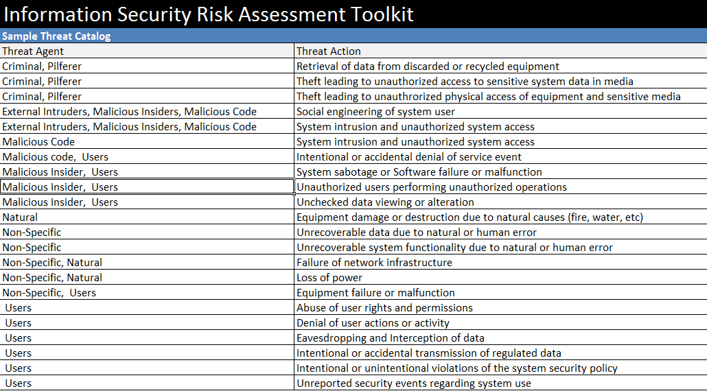

Katalozi prijetnji i taksonomije sigurnosti
Članovi tima:
- Monika Matak
- Dejan Mikulinjak
UVOD
Gotovo svaka metodologija za procjenu rizika sadržava barem kratak opis mogućih prijetnji. Za određivanje strukture kataloga najbolje je najprije odrediti publiku i primjenu tj. kontekst kataloga. Publika određuje razinu apstrakcije te dubinu i širinu kataloga prijetnje. Npr. ako je katalog prijetnji namijenjen „kućnim“ korisnicima, razina apstrakcije treba biti niska dok je suprotno za katalog prijetnji nekog IT poduzeća. Kontekst pak određuje kako najbolje strukturirati opis prijetnji te ako katalog služi za brz scenarij rizika u analizi rizika, onda je korisno imati primjere manifestacije prijetnji, što znači sredstva prijetnji i potencijalni utjecaj.[3]
--Monika Matak 20:32, 17. siječnja 2016. (CET)
KATALOZI PRIJETNJI
Većina kataloga prijetnji su ili pod pokroviteljstvom vlade ili IT sigurnosnih programa ili iz komercijalnih okvira za upravljanje rizicima. Organizacije poput OWASP, ISO / IEC, CERT, SANS i OASIS ne izdaju kataloge prijetnji. Microsoft daje pristup katalogu prijetnji no ne objavljuje katalog eksplicitno. Uz katalog kao dopunu daje javno dostupan alat za podršku. Dobra struktura kataloga prijetnji olakšava analize rizika i projektiranje arhitekture. BSI katalog koji je u nastavku detaljno opisan i prikazan nudi strukturu koja sama najbolje prosuđuje tijek rada arhitekture sigurnosti kao i analize rizika.
Za klasifikaciju prijetnji na najvišoj razini, predlaže se kategorizirati prostor prijetnji u pod prostore prema modelu tri međusobno okomitih dimenzija označenih kao motivacija, lokalizacija i sredstvo.[1]
{kind=link}
Sredstvo prijetnje nameće prijetnju na određenu imovinu te identificira tri klase za specifične klasifikacije prijetnji, a to su ljudi, tehnologija i viša sila. Najniža klasa su prijetnje uzrokovane ljudima poput korisnika, napadača, revizora, zajednica i državnih tijela. Tehnološke prijetnje su uzrokovane fizikalnim i kemijskim procesima na materijalu. Prijetnje viših sila su prijetnje okoliša, npr. potresi, munje, prijetnje vjetra i vode, životinja ili divljači. Prijetnje na visokim razinama uzrokuju prijetnje na nižim razinama, npr. udar munje kao prijetnje okoliša uzrokuje nestanak struje. [1]
--Monika Matak 20:26, 17. siječnja 2016. (CET)
BSI - OSNOVNE PRIJETNJE
Vatra
Vatra može uzrokovati ozbiljnu štetu ljudima, zgradama i popratnim objektima. Kao dodatak na štetu nastalu dIrektno djelovanjem vatre, imamo i kolateralnu štetu, koja može poprimiti katastrofalne razmjere, pogotovo na informacijskoj tehnologiji. Oštećenja nastala gašenjem požara vodom ne pojavljuju se samo na mjestu požara. Mogu se pojaviti i u drugim prostorijama. Tijekom gorenja PVC-a , nastaje klor, koji u kombinaciji s vlagom i vodom za gašenje požara tvori klorovodičnu kiselinu. Kada se pare klorovodične kiseline prošire putem ventilacijskih otvora, oštećenja mogu nastati i na osjetljiv elektroničkim uređajima koji su udaljeni od mjesta požara. Međutim, i "obični" dim vatre može uzrokovati štetu na elektronskoj opremi. Ne samo nemarno postupanje s vatrom ( npr. otvoreni plamen bez nadzora, zavarivanje i lemljenje), također i nepravilno korištenje električnih uređaja ( npr. uključen aparat za kavu ostavljen bez nadzora, preopterećenje utičnica produžnog kabla) može rezultirati izbijanjem požara. Tehnički neispravna oprema također može izazvati požar. Širenje požara može uzrokovati:
• ostavljanje vatro-nepropusnih vrata otvorenima
• neprikladno skladištenje zapaljivih materijala (npr. otpadni papir)
• neprovođenje standarda i pravilnika o zaštiti od požara
• nedostatak vatrodojavnih i alarmnih sustava ( npr. senzori dima)
• nedostatak ili neispravnost ručnih ili automatskih vatrogasnih aparata
• neadekvatna preventiva objekta od požara ( npr. nedostatak vatroizolacije na kabelima ili upotreba neprikladnih materijala za toplinsku i zvučnu izolaciju)
Primjeri: • početkom 90-tih glavni računalni centar u okolici Frankfurta pretrpio je katastrofalni požar koji je doveo do potpunog uništenja
• često se događa da mali su električni uređaji, kao aparat za kavu ili stolna lampa, nepravilno instalirani i zbog toga izazovu požar
Nepovoljni vremenski uvjeti
Nepovoljni vremenski uvjeti kao što su vrućina, mraz ili velika vlažnost mogu dovesti do velikog spektra štete kao kvarova u tehničkom smislu ili medija za pohranu. Čestim promjenama klimatskih uvjeta pojačavaju se ti učinci. Nepovoljni vremenski uvjeti mogu dovesti i do situacije gdje čovjek više nije sposoban za rad ili je ozlijeđen ili usmrćen. Svako ljudsko biće i svaki tehnički uređaj ima raspon temperature unutar kojeg mu je zajamčen normalan rad i pravilno funkcioniranje. Kada temperatura okoline prelazi donju ili gornju granicu raspona, može doći do zastoja operativnih poremećaja ili kvara uređaja. Npr., el. energija zbog uključenih uređaja se pretvara u toplinu što zagrijava prostoriju u kojoj se nalaze. U slučaju nedovoljne prozračnosti, dopuštena radna temperatura uređaja može biti prekoračena. Zbog solarnog izlaganja, temperatura u sobi može doseći 50 stupnjevaCelzijusa. Zbog bolje prozračnosti, prozori u server sobi su često otvoreni bez dopuštenje. U prijelaznim razdobljima sa većim temperaturnim razlikama ( proljeće, jesen) može doći do povećanja dopuštene vlažnosti zraka uslijed zahlađenja. Kod spremanja digitalnih podataka , prevelike promjene u temperaturi ili prevelika vlažnost, mogu dovesti do greške u podacima ili smanjiti razdoblje zadržavanja podataka. Neki proizvođači kažu da je optimalna temperatura za pohranu podataka između 20 i 22 stupnja Celzijusa te 40% vlažnosti zraka. Također , analogni mediji kao što su papir ili mikrofilm zahtijevaju određene uvjete skladištenja. Ako, na primjer, pohranimo papir na prevlažnom mjestu, može postati pljesniv ili se raspasti.
Primjeri: • visoke temperature ljeti i neadekvatno hlađenje IT opreme mogu prouzročiti kvarove
• previše prašine na IT opremi mogu dovesti do povećanja temperature
• previsoke temperature mogu uzrokovati demagnetizaciju magneta na medijima za pohranu
Voda
Voda može utjecati na integritet i dostupnost podataka pohranjenih na analogni ili digitalni medij za pohranu. Također podaci na RAM-u su u opasnosti. Nekontrolirano pritjecanje vode u zgradu ili prostorije može se dogoditi zbog :
• poremećaja u vodoopskrbi ili odvodnji
• neispravnog sustava grijanja
• neispravnog sustava hlađenja s vodoopskrbom
• neispravnih automatskih vodenih prskalica
• vode korištene tijekom gašenja požara
• vodene sabotaže –otvorene slavine i začepljeni odvodi
Bez obzira na koji način voda ulazi u zgradu ili prostorije, podrazumijeva rizik da će postrojenja ili IT komponente biti oštećene i izvan funkcije ( kratki spoj, mehanička oštećenja, hrđa itd.) Pogotovo ako je centralno postrojenje zgrade ( glavni distributer energije, telefona i podataka) smješteno u podrumskim prostorijama bez automatskog sustava odvodnje, ulazak vode može prouzročiti jako velike gubitke. Osim toga, mogu nastati i problemi zbog smrzavanja. Npr., u područjima ugroženim od smrzavanja, cijevi mogu početi propuštati ako voda mirno stoji u njima što poprati stvaranje mraza. Čak i postojeću toplinska izolacija će s vremenom obuzeti mraz.
Primjer:
• preko stropa sobe poslužitelja koji je napravljen od kanufploča, prolazile su cjevi s vodom. Kada je počela curiti voda na spojevima cijevi, problem nije uočen na vrijeme. Najprije se voda počela skupljati u najdubljoj točki obloga te je zatim počela istjecati i uzrokovala kratki spoj u razvodniku.Kao posljedica, i vodoopskrba i opskrba el. energije morale su biti na kraju kompletno zamijenjene.
Onečišćenje, prašine, korozije
Osim elektronike, mnogi IT uređaji imaju i mehaničke komponente kao što su tvrdi diskovi, izmjenjivi diskovi, DVD pogoni, pisači , skeneri, rashlađivači CPU-a i jedinice za napajanje. S povećanjem kvalitete i zahtjevima veće brzine, ti uređaji moraju više i preciznije raditi. Čak i mala onečišćenja mogu remetiti rad uređaja. Prašinu i onečišćenje u većim količinama mogu izazvati sljedeće situacije:
• restauriranje zidova, podova i ostalih građevinskih dijelova
• ugradnja željeza ili slični poslovi
• pakiranje ( dijelovi stiropora)
Isključivanjem uređaja pravovremeno bi se osigurali postojeći sigurnosni krugovi opreme. To ograničava direktnu štetu na pogođenim uređajima, smanjuje troškove popravka i skraćuje zastoj, ali zahvaćeni uređaji ostaju nedostupni tijekom zastoja. Osim toga, oprema i infrastruktura mogu biti oštećeni i korozijom. To može imati negativni utjecaj ne samo na IT nego i na sigurnost objekta. Korozija može neizravno dovesti i do budućih rizika. Na primjer, kada voda istječe iz korozivnih vodovodnih cijevi. Sve u svemu onečišćenja, prašina i korozija mogu dovesti do kvara ili štete na IT opremi i opskrbu objekta. Kao posljedica toga može biti umanjena pravilna obrada informacija.
Primjer:
• nakon instalacije servera zajedno sa fotokopirkom i faksom, pogreške unutar CPU rashlađivača i napajanja ventilatora prouzročile su uzastopno povećanje razine prašine u sobi. Kvar na CPU rashlađivaču doveo je do povremenog rušenja sustava. Kvar na napajanju ventilatora doveo je do zagrijavanja jedinica napajnja što je rezultiralo kratkim spojem što je na kraju povuklo totali raspad sistema.
Prirodne katastrofe
Uz prirodne katastrofe prirodnim promjenama se smatraju one koje imaju poražavajući utjecaj na ljude i infrastrukturu. uzorci prirodnih katastrofa mogu biti seizmičke, klimatske i vulkanske pojave kao što su potresi, poplave, klizišta, tsunami, lavine i vulkanske erupcije. Primjeri meteoroloških pojava su oluje, uragani ili ciklone. Ovisno o lokaciji, institucije su izložene rizicima koji proizlaze iz različitih vrsta prirodnih katastrofa, u većoj ili manjoj mjeri. Neovisno o vrsti prirodne katastrofe, čak i za područja koja nisu pod izravnim utjecajem, postoji opasnost da sustavi napajanja, komunikacijske veze ili IT komponente budu oštećene ili im se prekine rad. Kvar na glavnom postrojenju napajanja zgrade ( glavni razvodnik energije, telefona, interneta) može prouzročiti velike gubitke.
Primjer:
• u slučaju da se računalni centar nazali u području visokog rizika od poplava, postoji velika opasnost od nekontroliranog ulaska vode u zgradu ( poplava ili podzemne vode)
• mnoga komercijalan poduzeća kao i velike tvrtke, ne uzimaju ozbiljno prijetnju od poplava. Ima tvrtka koja je bila "iznenađena" poplavom u njihovom računlanom centru već nekoliko puta. Njihov računalni centar je doslovno otplivao nakon oštećenja poda drugi put u 14 mjeseci. Nastali troškovi su iznosili nekoliko tisuća eura koje osiguranje nije pokrilo.
Ekološke katastrofe
Javno tijelo ili tvrtka može pretrpjeti štetu kada se dogodi ozbiljna nesreća u njegovom okruženju, npr. požar, eksplozija, oslobađanje otrovnih tvari ili radijacijsko zračenje. Dakle, prijetnja od opasnosti nije samo tijekom događanja katastrofe, nego često i kod aktivnosti koje su rezultirale opasnošću, kao na primjer ograničenje pristupa i mjere spašavanja. Imovina neke institucije može biti izložena raznim prijetnjama iz okoliša, između ostalog -prometa ( cestovnog, željezničkog, zračnog i pomorskog), susjednih tvrtki ili stambenih područja. Čak i preventivne ili mjere sigurnosti mogu izravno utjecati na imovinu. Takve mjere mogu dovesti do situacije da zaposlenici ne mogu do svojeg radnog mjesta ili osoblje mora biti evakuirano. Međutim, kompleksnost tehničke podrške i IT sustava može također povećati neizravne probleme.
Primjer :
• uslijed izbijanja požara u kemijskoj tvornici u neposrednoj blizini računalnog centra ( cca. 1000 metara zračne linije) nastao je veliki oblak dima. Računalni centar je imao klimatizacijski i ventilacijski sustav koji nije imao vanjsko praćenje zraka. Zahvaljujući pažnji zaposlenika ( nesreća se dogodila tijekom radnog vremena) koji je primijetio pojavu i širenje oblaka, vanjski dovod zraka je bio isključen.
Masovni događaji u okolini
Velika zbivanja svake vrste mogu ometati pravilan rad javnih tijela ili tvrtki. Oni su između ostalog ulični festivali, koncerti, sportski događaji, industrijske aktivnosti ili demonstracije. Nemiri koje dolaze s takvim događajima mogu imati dodatne posljedice kao i strah radnika da će nad njima ili zgradom biti izvršena neka vrsta nasilja.
Primjer:
• tijekom vrućih ljetnih mjeseci bio je prosvjed u blizini računalnog centra. Situacija je eskalirala u nasilje. Na drugoj strani ulice, prozor na računalnom centru je bio otvoren te je jedan od prosvjednika iskoristio te ukrao računalo sa važnim podacima na njemu.
Kvar ili smetnje u napajanju
Usprkos velikoj sigurnosti opskrbe u elektroenergetskom sektoru, smetnje u napajanju el. energijom se i dalje događaju. Veći dio tih smetnji je kraći od jedne sekunde, tako da ih čovjek ni ne primijeti. Ali smetnja veća od 10 milisekunde je u stanju poremetiti rad IT operacija. Međutim, osim smetnji u opskrbi mreže i pad sistema ili oštećenja na kabelima zbog radova mogu dovesti do nestanke struje. Svakako, ne ovise samo očiti potrošači struje ( PC, rasvjeta) o napajanju. Mnogi infrastrukturni objekti ovise o el. energiji, npr. dizala, klimatizacijski uređaji, alarmni sustavi, izlazi u nuždi, automatsko zaključivanje i protupožarni sistem. Čak i opskrba vodom u neboderima ovisi o el. energiji zbog crpki koje proizvode pritisak i dovode vodu do svih katova. Dugotrajni prekid rada infrastrukturnih objekata može dovesti do situacije gdje njihova aktivnost više uopće nije moguća. Osim kvarova i drugih smetnji mogu narušiti funkcioniranje. Visoki napon, npr. može dovesti do smetnji ili čak oštetiti elektronsku opremu. Treba uzeti u obzir da ponekad smetnje i kvarovi u susjedstvu mogu utjecati na osobne poslovne procese, npr. kvar u vodovima.
Primjer:
• zbog kvara u neprekinutom napajanju jedinica u računalnom centru jedinice nisu bile u mogućnosti vratiti se normalnom radu nakon kratkog prekida struje. Nakon što su im se ispraznile UPS-ovi ( što se dogodilo oko 40 min nakon) svi kompjuteri u dvorani su podbacili.
Kvar ili smetnje u komunikacijskoj mreži
Mnogi današnji poslovni procesi zahtijevaju barem jedan od komunikacijskih kanala ispravnim, bio to telefon, fax, e-mail ili neki drugi servisi koji koristI lokalnu mrežu. Ako jedan ili više od tih komunikacijskih kanala nije dostupan kroz duže vrijeme, to može rezultirati sljedećim situacijama: poslovni procesi se prekidaju jer se ne mogu zaprimiti potrebni podaci, korisnici ne mogu kontaktirati službu za korisnike, nalozi se ne mogu izdati ili završiti. Ako vremenski kritične aplikacije rade na IT sustavu koji je spojen preko mreže za šire područje mogući gubici i posljedice, nastali tijekom prekida rada mreže su veliki ako nema alternative ( npr. priključak na drugu mrežu) Slični problemi mogu nastati ako mreža ima kakvih smetnji iako veza nije skroz u kvaru. Komunikacijski kanali su pokazatelji povećane stope problema i drugih nedostatka u kvaliteti.
Primjer:
• za mnoge institucije Internet je postao nezamjenjiv komunikacijski medij današnjice, za dohvat važnih informacija, za potrebe zastupanja i komunikaciju s potrošačima i partnerima, između ostalog. Tvrtke koje su specijalizirane za servis baziran na internetu su izrazito ovisne o internetskoj vezi
Kvar ili smetnje električnog napona
U zgradama postoji raznovrsnost mreže za osnovnu opskrbu i zbrinjavanje, kao takva, potrebna je poslovnim procesima, uključujući i IT. Primjeri takve mrežne opskrbe su : el. energija, telefon, klima, grijanje ili ventilacija, protupožarni sustavi, plin, alarmni i nadzorni sustavi ( protiv provale, požara, videonadzor), portafoni. Kvar ili prekid na opkrbi mreže može dovesti do situacije, gdje između ostalih stvari, ljudi ne mogu nastaviti rad u zgradi ili na IT opremi te su informacijski procesi obustavljeni. Određene mreže su ovisne o radu drugih mreža u različitim stupnjevima, tako da operativni poremećaj u pojedinoj mreži može imati učinak na drugu mrežu. Primjer: • problemi sa grijanjem ili ventilacijom može imati za posljedicu da svi djelatnici moraju napustiti zgradu. To može u određenim okolnostima rezultirati velikim gubicima.
Kvar ili smetnje davatelja usluga
Teško da danas koja institucija funkcionira bez davatelja usluga kao što su kooperanti ili vanjski suradnici. Ako organizacija ovisi o davatelju usluga, njezina radna sposobnost može biti umanjena tijekom odsutnosti vanjskog suradnika. Djelomični ili potpuni prekid rada vanjskog suradnika ili kooperanta može imati značajan učinak na operativni kontinuitet, osobito u slučaju kritičnih poslovnih procesa. Postoje različiti razlozi prekida rada, kao na primjer nelikvidnost, jednostran raskid ugovora od strane suradnika ili kooperanta, operativni problemi zbog sila prirode ili nedostatka zaposlenika. Problemi mogu nastati i ako poslovi davatelja usluge kvalitetom ne ispunjavaju zahtjeve tražene od ugovaratelja. Osim toga, treba uzeti u obzir da davatelji usluga pribjegavaju također kooperantima kako bi njihove usluge bile dostupne ugovarateljima. Smetnje, nedostaci u kvaliteti i kvarovi od strane kooperanata mogu tako neizravno dovesti do narušavanja odnosa. Ugovarateljevi poslovni procesi također mogu biti narušeni zbog poteškoća koje ima davatelj usluga u svojem IT sistemu ili komunikacijskoj vezi. U slučaju da se pokaže potrebnim, raskid ugovora s davateljem usluga, može biti znatno kompliciran ako postupci davatelja usluga nisu odgovarajuće dokumentirani, ili ako bivši davatelj usluga ne podržava takvo prestrojavanje. (ne slaže se s raskidom, to je često problem i u vezama) Primjer: • tvrtka je ugradila svoj server na računalni centar vanjskog suradnika. Nakon požara u računalnom centru financijski odjel tvrtke nije imao uvjete za rad. To je rezultiralo značajnim gubitkom za tvrtku.
Uplitanja zračenja
Danas se informacijska tehnologija sastoji od elektroničkih komponenti u velikoj mjeri. Iako je optička tehnologija prijenosa sve više u uporabi, kompjuteri, mrežni elementi za povezivanje i sustavi za pohranu podataka još uvijek u pravilu sadrže elektroničke komponente. Zbog elektromagnetskih utjecajna te komponente, elektronički uređaji mogu biti usporeni u svojem radu ili čak oštećeni. Između ostalih problema kao posljedica toga mogu se pojaviti smetnje, pogrešni rezultati obrade ili komunikacijske greške. Bežična komunikacija također može imati smetnje zbog zračenja. Tako da, dovoljna je jaka smetnja uobičajenih frekvencijskih veza u određenim okolnostima. Nadalje, informacije koje su spremljene na određene vrste medija za pohranu pod utjecajem zračenja mogu se izbrisati ili iskriviti. To se odnosi posebno na magnetsko osjetljive pohrane podataka ( tvrdi diskovi, magnetske vrpce) i poluvodičku memoriju. Oštećenja na takvu vrstu pohrane podataka tijekom radijacije su također moguća. Ima mnogo različitih izvora elektromagnetskih polja ili zračenja, npr. bežični internet ( kao WLAN), Bluetooth, GSM, UMTS..itd., trajni magneti i kozmička zračenja. Dodatno, svaki električni uređaj emitira elektromagnetske valove različite jakosti koji se mogu širiti na druge putem zraka uz vodiče metala ( kabeli, klimatizacijski kanali, cijevi grijanja). U Njemačkoj, to područje je regulirano Zakonom za elektromagnetsku kompatibilnost resursa ( EMVT _ Gesetz uber die elektromagnetische Vertaglichkeit von Betriebsmitteln)
Presretanje kompromitirajućih emisija
Električni uređaji emitiraju elektomagnetske valove. U slučaju opreme koja obrađuje informacije ( računala, displeji, mrežni elementi za povezivanje, pisači) zračenje može sadržati u sebi informacije koje su upravo bile obrađene putem iste. Takve informacije se nazivaju kompromitirajuće emisije. Napadač, npr. u susjednoj kući ili parkiranom vozilu u neposrednoj blizini može pokušati presresti to zračenje i rekonstruirati obrađenu informaciju koju nosi. Povjerljivost informacija je u tom slučaju dovedena u pitanje. Mogući motiv za takav napad je industrijska špijunaža. Odredbe u Zakonu o elektromagnetskoj kompatibilnosti resursa nisu dovoljne u prevenciji presretavanja kompromitirajućih emisija. Ukoliko rizik ne dolazi u obzir, potrebno je poduzeti dodatne mjere sigurnosti. Kompromitirajuće emisije nisu ograničene samo na elektromagnetske valove. Korisne informacije se mogu ponekad preuzeti iz zvučnih valova koje proizvode pisači ili klavijature. Osim toga, treba uzeti u obzir da se kompromitirajuće emisije mogu u nekim slučajevima, izazvati ili proširiti vanjskom manipulacijom uređaja. Ako je uređaj izložen zračenju elektromagnetskih valova, može se dogoditi da reflektirajući valovi sadrže povjerljive informacije.
Presretanje informacija / špijunaže
Špijunaža se definira kao napad usmjeren na prikupljanje, vrednovanje i prezentiranje informacija o tvrtkama, ljudima, proizvodima i drugim ciljanim objektima. Prikazana informacija se može koristiti npr. za pružanje određenih konkurentskih prednosti u odnosu na drugu tvrtku, za ucjenu ljudi ili pravljenje kopije proizvoda. Osim raznih tehnički složenih napada, često postoje i puno jednostavnije metode za dobivanje vrijednih informacija, primjerice okupljanjem informacije iz nekoliko javno dostupnih izvora koji izgledaju kao bezopasne informacije u izolaciji, ali mogu biti kompromitirajući u drugim kontekstima. Budući da povjerljivi podaci često nisu dovoljno zaštićeni, to često može biti prekinuto koristeći vizualne, akustične i elektroničke načine.
Primjer: Puno IT sustava je zaštićeno od neovlaštenog pristupa identifikacijskim i autentifikacijskim mehanizmima, npr. u obliku provjere korisničkog imena i lozinke. Ako se lozinka preko žice prenosi u nesigurnom obliku, pod određenim okolnostima postoji mogućnost da je napadač dohvati.
Prisluškivanje
Ciljani napadi na komunikacijske veze, razgovore, izvore buke svih vrsta ili IT sustava s ciljem prikupljanja informacija nakon prisluškivanja. Prisluškivanja variraju od neprimijećenih, tajnih prisluškivanja na razgovoru do visoko specijaliziranih složenih napada kako bi se presreli signali preko radio veza ili dalekovoda npr. pomoću atene ili senzora. To nije samo zbog niskih šansa za otkrićem prisluškivanja linija ili bežičnih veza, nego zato jer je to značajna prijetnja za informacijsku sigurnost. O tome je li linija bila prisluškivana, može se utvrditi samo kroz visoke meteorološke napore. Posebno je kritičan nezaštićeni prijenos podataka za autorizaciju podataka u običnom tekstu protokolima kao što su HTTP, FTP ili telnet, jer oni mogu biti lako analizirani jasnom strukturom podataka. Odluka o prisluškivanju informacija negdje je u načelima određena kroz pitanje o vrijednosti informacije te postoji li potreba za određenim tehničkim i financijskim naporima i rizicima da bude prisluškivanje otkriveno. Odgovor na ovo pitanje uglavnom ovisi o individualnim mogućnostima i interesima napadača.
Primjer: U slučaju telefonskih poziva, to nije samo prisluškivanje razgovora koji mogu biti interes napadala, Podaci koji se prenose u signalizaciji mogu se zloupotrijebiti od strane napadača.
Krađa uređaja, medija za pohranu i dokumenata
Krađa medija za pohranu podataka, informacijskih sustava, pribora, softvera ili podataka, s jedne strane rezultira troškovima za zamjenu i vraćanje operativnog statusa. S druge strane, postoje gubici zbog nedostataka dostupnosti. Ako su otkrivene povjerljive informacije zbog krađe , to može rezultirati daljnjim oštećenjem. Osim poslužitelja i drugih skupih IT sustava, također mobilni IT sustavi, koji su nenametljivi i lako se prenose, također su često ukradeni. Međutim postoje i slučajevi u kojima su mediji za pohranu podataka kao što su dokumenti i USB stikovi namjerno ukradeni za pristup povjerljivim informacijama koje su tamo pohranjene.
Primjer: Nekoliko puta je provaljeno u Njemački Savezni ured kroz neosigurane prozore. Mobilni IT sustav nestao je zajedno sa drugim dragocjenostima. Ne može se isključiti da su datoteke kopirane i manipulirane.
Gubitak uređaja, medija za pohranu i dokumenata
Postoji niz uzoraka koji mogu dovesti do gubitka opreme, medija za pohanu podataka i dokumenata. Izravno, dostupnost je briga. Ali to također može značiti da povjerljive informacije padnu u pogrešne ruke, ako mediji za pohranu podataka nisu potpuno šifrirani. Zamjenom opreme ili medija za pohranu podataka nastaje šteta, ali ako se ponovno pojavljuju informacije mogu biti otkrivene ili neželjeni programi mogu boraviti u njima. Mobilna oprema i mobilni mediji za pohranu podataka osobito se lako mogu izgubiti. Danas se na male memorijske kartice mogu pohraniti ogromne količine podataka. Međutim, također se i opet događa da se tiskani dokumenti nehotice ostave negdje na javnom mjestu.
Primjer: Zaposlenici koriste putovanje tramvajem do svojeg radnog mjesta za čitanje raznih dokumenata. Kada silaze s tramvaja u žurbi ostavljaju dokumente nehotice na nekom mjestu. Iako možda dokumenti nisu povjerljivi, neki potpisi mogu biti iskorišteni te to može snositi posljedice.
Loše planiranje ili nedostatak prilagodbi
Ukoliko organizacijski procesi koji služe izravnoj ili neizravnoj obradi informacija nisu pravilno napravljeni, to može dovesti do sigurnosnih problema. Iako je svaki korak u procesu ispravno napravljen, šteta često nastaje jer su svi procesi zajedno definirani na neodgovarajući način. Drugi mogući razlog zbog kojeg nastaju sigurnosni problemi je ovisnost o drugim procesima koji nemaju nikakvu očitu povezanost s obradom podataka. Takva se ovisnost može lako zanemariti tijekom planiranja i može biti okidač oštećenjima tijekom operacija. Osim toga, sigurnosni se problemi mogu pojaviti kada zadaci, uloge i odgovornosti nisu jasno dodijeljene. To može uzrokovati, medu drugim stvarima da procesi kasne, da su zanemarene sigurnosne procedure, a pravila da su nepoštovana. Opasnost se povećava kada oprema, proizvodi, postupci ili druga sredstava za provedbu obrade informacija nisu pravilno raspoređeni. Izbor neprikladnih proizvoda ili slabe točke u primjeni aplikacijske arhitekture ili u dizajnu mreže dovesti do sigurnosnih problema. Informacijska tehnologija i kompletan okoliš javnog tijela ili tvrtke stalno se mijenjaju. Bilo da zaposlenici odlaze i dolaze, da je nabavljen novi software ili hardware ili dobavljač odlazi u stečaj. Ukoliko slijedeće organizacijske i tehničke prilagodbe nisu uzete u obzir ili su uzete neadekvatno, mogu slijediti prijetnje. Primjeri: Ako održavanje ili procesi popravka nisu dizajnirani da ispune tehničke zahtjeve, kao posljedica mogu se javiti neprihvatljiva ispadanja. Povećani rizik može nastati iz napada na vlastite IT sustave ako sigurnosne potrebe nisu uzete u obzir pri nabavi informacijskih tehnologija.
Objavljivanje osjetljivih podataka
Povjerljivi podaci i informacije moraju biti dostupni samo osobama koje su ovlaštene primati takve informacije. Uz cjelovitost i dostupnost, povjerljivost pripada osnovnim parametrima informacijske sigurnosti. Za povjerljive informacije (kao što su lozinke, osobni podaci, službene ili poslovne tajne, razvoj podataka) postoji svojstvena opasnost da se razotkriju zbog tehničkog kvara, nepažnje ili namjernih radnji. Tim se povjerljivim informacijama može pristupiti na različite načine, na primjer: na mediju za pohranu unutar računala (tvrdi diskovi), na pokretnom mediju za pohranu(USB stikovi, CD-a ili DVD-a), u tiskanom obliku na papiru (print izlasci, datoteke) i na prijenosnim putovima tijekom prijenosa podataka. Način na koji se podaci otkrivaju, također može uvelike varirati, primjerice: neovlašten pristup za čitanje datoteka, nemarno širenje npr.u tijeku popravka naloga, neadekvatno brisanje ili uništavanje medija za pohranu podataka, ukraden medij za pohranu podataka i naknadno proučavanje podataka, prisluškivanje na dalekovodima, zaraza IT sustava s zlonamjernog softvera, prisluškivanje pregledom podataka na zaslonu ili prisluškivanje na razgovore Objavljivanje povjerljivih podataka može imati ozbiljne posljedice za instituciju. Gubitak povjerljivosti može medu ostalim dovesti do slijedećih negativnih utjecaja na institucije: kršenje zakona, za zaštitu npr. podataka i bankovne tajne, negativni unutarnji učinci, primjerice demoralizacije zaposlenika, negativno vanjski utjecaji, npr. slabljenje odnosa s poslovnim partnerima, izgubljeno povjerenje kupaca, financijske posljedice, na primjer zahtjev za naknadu, novčane kazne, troškovi postupka oštećenje informacijskog prava na samoodređenje. Gubitak povjerljivosti nije uvijek odmah primijećen. Često ispada da neovlaštene osobe tek kasnije dobivaju pristup povjerljivim informacijama, npr. novinarsko istraživanje.
Primjer: Kupci rabljenih računala, hard diskova, mobitela i sličnih uređaja u vise su navrata nalazili povjerljive pohranjene informacije na njima, kao sto su medicinska dokumentacija ili brojevi računa.
Informacija ili proizvod iz nepouzdanih izvora
Ako informacije, softver ili oprema koja se koristi, dolaze iz nepouzdanih izvora ili čije podrijetlo i ispravnost nisu dovoljno provjereni, njihova implementacija može predstavljati visoke rizike. Između ostalog to može dovesti da se relevantna poslovna informacija nalazi u pogrešnoj bazi podataka, kalkulacija daje pogrešne rezultate ili se donose pogrešne odluke. Na taj način može se utjecati na integritet i dostupnost IT sustava.
Primjer: Primatelj e-pošte, čije podrijetlo nije verificirano, može se poticati na obavljanje određene radnje koje imaju negativan utjecaj na njega ili druge. Na primjer, e-mail može sadržavati zanimljive privitke ili linkove, koji kada se pritisnu automatski instaliraju štetan softver na računalu primatelja. Adresa pošiljatelja e-pošte može biti krivotvorena ili može oponašati poznate komunikacijske partnere.
Manipulacija hardvera ili softvera
Manipulacija se definira kao bilo koji oblik ciljane, ali tajne intervencije s ciljem da promijeni ciljane objekte svih vrsta na neprimjetan način. Manipulacija hardvera ili softvera može biti izvedena , među ostalim situacijama, kada se pod utjecajem želje osvete namjerno stvori šteta, za dobivanje osobne prednosti ili dobitak. Takva manipulacija može biti usredotočena na sve vrste uređaja, pribora, medija za pohranu podataka (npr. DVD, USB stikovi), aplikacija i baze podataka i slično. Manipulacija hardvera i softvera ne uvijek dovesti do izravnog gubitka. Međutim, ako je takva informacija obrađena, to može dovesti do sve vrste sigurnosnih implikacija (gubitak povjerljivosti, cjelovitosti ili raspoloživosti). Na taj način manipulacija može biti učinkovitija ako je kasnije otkrivena, počinitelji imaju opsežnije znanje i posljedice na proces rada biti ce dublje. Efekti se kreću od neovlaštenog pregleda osjetljivih podataka te do uništenja medija za pohranu podataka i informacijskih sustava. Manipulacija stoga može rezultirati znatnim zastojima.
Primjer: U Švicarskoj financijskoj tvrtci, zaposlenik je manipulirao softver koji se koristi za određene financijske usluge. To mu je omogućilo da na ilegalan način dobi velike količine novca.
Manipulacija informacija
Informacijama se može manipulirati na različite načine, npr. netočno ili namjerno lažno bilježenje podataka, svaka promjena u sadržaju polja baze podataka ili putem dopisivanja. U principu, to se ne odnosi samo na digitalne informacije, nego npr. i na dokumente u papirnatom obliku. Međutim počinitelj može samo manipulirati podacima na koje ima pristup. Sto veća prava pristupu datotekama i direktorijima IT sustava osoba imali što veće mogućnosti za pristup informacijama može se provesti više značajnih manipulacija. Ako manipulacije nisu rano otkrivene, lagan napredak poslovnih procesa i stručnih poslova na taj se način može ozbiljno poremetiti. Arhivirani dokumenti obično sadrže osjetljive podatke. Manipulacija takvim dokumentima je posebno ozbiljno, jer, pod određenim okolnostima, može trajati godinama prije nego što se ona primijeti i verifikacija često više neće biti moguća. Manipulacija podataka provodi se pod utjecajem želje za osvetom, da se namjerno stvori šteta ili za dobivanje osobne prednosti ili u svrhu obogaćivanja.
Primjer: Zaposlenica je bila toliko ljuta na promociji njezine cimerice u računovodstvu da je tijekom kratkog odsustva njezine kolegice, nezakonito stekla pristup njezinom računalu. Promjenom, nekih brojki u mjesečnom izvještaju, izazvala je ogroman negativan utjecaj u objavljenim financijskim rezultatima tvrtke.
Neovlašteni pristup IT sustavu
U načelu, svako sučelje IT sustava ne uključuje samo mogućnost da se legalno koriste određene usluge ovog informatičkog sustava koje se odnose na ovo sučelje, ali i opasnost od neovlaštenog pristupa IT sustavu putem tog sučelja.
Primjer: Ako su špijunirani korisnički ID i pasword, moguća je neovlaštena uporaba aplikacija ili IT sustava koji su njima zaštićeni.
Uništavanje uređaja ili medija za pohranu
Vanjski i unutarnji počinitelji mogu, iz različitih razloga (osvete, zloće, frustracija), pokušati uništiti opremu, pribor, dokumente i druge medije za pohranu podataka (npr. DVD, USB stick) ili slične medije. Uništavanje medija za pohranu podataka ili IT sustava može rezultirati značajnim zastojima za poslovne procese. Zbog nemara, nepravilne uporabe te neodgovarajućeg rukovanja, može doći do uništenja uređaja i medija za pohranu podataka što ozbiljno narušava rad IT sustava. Tu je i rizik da, uz uništenje, mogu biti izgubljene važne informacije što se najčešće ne može rekonstruirati ili samo uz velike napore.
Primjer: U tvrtci interni počinitelj koristi svoje znanje da je važan poslužitelj osjetljiv na previše visoke radne temperature i blokira ventilacijske proreze za napajanje ventilatora pomoću objekt skrivenog iza poslužitelja. Dva dana kasnije, tvrdi disk na poslužitelju doživi kvar prouzročen temperaturom, a poslužitelj je dolje za nekoliko dana.
Kvar uređaja ili sustava
Kvar jednog dijela IT sustava može dovesti do kvara cjelokupnog IT sustava, a time i do neuspjeha kritičnih poslovnih procesa. Posebice, ključne komponente informacijskog sustava, primjerice, poslužitelji i spojni elementi mreže, vjerojatno će izazvati takve kvarove. Također kvar pojedinih komponenti tehničke infrastrukture, kao što su klima-uređaj ili napajanje objekata, mogu pridonijeti kvaru cijele informacijske mreže.. Razlog za neuspjeh IT sustava nije uvijek tehnički kvar (npr. T 0.8 Kvar ili prekid napajanja). Kvarovi se često mogu pripisati ljudskim pogreškama (npr. T 0,24 Uništavanje uređaja ili medija za pohranu) ili namjernih radnji (npr. T 0,16 Krađa uređaja, medija za pohranu i dokumenata, T 0.41 Sabotaža). Također, nedostatak održavanja, primjerice zbog nepostojanja osoblja koje održava sustave, može dovesti do tehničkog kvara. Viša sila (kao što su vatra, munja, kemijske nesreće) također može uzrokovati štetu, ali ta je šteta obično mnogo puta veća. Ako vremenski kritične aplikacije rade na IT sustavu bez alternative, posljedične štete nakon ispada sustava su visoke.
Primjer: Pogreške u napajanju u memorijskom sustavu na stranici od ISP rezultiralo je da se isključi. Iako je stvarna pogreška mogla biti ispravljena brzo, pogođeni IT sustavi nisu mogli početi iznova zbog nedosljednosti u sustavu datoteka. Kao rezultat toga, nekoliko web poslužitelja kojima upravlja ISP nije bilo dostupno nekoliko dana.
Neispravnost uređaja ili sustava
Uređaji i sustavi koji služe za obradu informacija, danas često imaju mnoge funkcije, te je shodno tome složen dizajn. To se uglavnom odnosi na hardver i softverske komponente. Zbog ove složenosti, postoji mnogo različitih izvora pogrešaka u takvim komponentama. Kao posljedica toga, događa se da uređaji i sustavi ne funkcioniraju kao što je bilo namijenjeno, a to dovodi do sigurnosnih problema. Postoje mnogi uzroci neispravnosti uređaja ili sustava, kao što su zamor materijala, proizvodne tolerancije, slab dizajn, premašenje limita, neadekvatno korištenje ili manjkavo održavanje. Budući da ne postoje savršeni uređaji i sustavi neki postotak vjerojatnosti kvarova treba prihvatiti. Kvar uređaja ili sustava mogu utjecati na sve osnovne parametre informacijske sigurnosti (povjerljivost, integritet, dostupnost). Osim toga,pod određenim okolnostima kvarovi mogu ostati nezapaženi na duži period. Stoga se može dogoditi da su rezultati proračuna lažni i nisu ispravljeni na vrijeme.
Primjer: Blokirana ventilacijska rešetka uzrokuje pregrijavanje sustava za pohranu, koji se ne sruši potpuno, ali kvarovi nastaju sporadično nakon toga. Nekoliko tjedana kasnije uočeno je da pohranjena informacija nije potpuna.
Nedostatak resursa
Ako su resursi u određenom području nedostatni, može doći do neuspjeha u opskrbi tih sredstava. Ovisno o vrsti sredstva, čak i malih događaja, koja su predviđena da se dogode mogu na kraju utjecati na veliku količinu poslovnih procesa. Nedostatak sredstava može se pojaviti u IT operacijama i komunikacijama, ali također i u drugim dijelovima institucija. To može dovesti do raznih negativnih posljedica, ako se za određene zadatke nema dovoljno osoblja vremena i sredstava. To se može dogoditi primjerice, da potrebne uloge u projektima nisu ispunjene kvalificiranim ljudima. Ako resursi kao što su hardver i softver ne ispunjavaju uvjete, pod određenim okolnostima ne može se obrađivati tehničke zahtjeve. Osoblje, vrijeme, financijske, tehničke i druge nestašice u normalnom radu često se mogu nadoknaditi, međutim u ograničenom razdoblju. U ekstremnim vremenima ipak, npr. u hitnim situacijama postaju još očitije. Resursi mogu biti namjerno preopterećeni, ako netko namjerno stvara snažnu potrebu za resursima i na taj način izaziva intenzivna i uporna mjerenja tog resursa.
Primjer: Pregrijavanje električne žice koja u nepovoljnim uvjetima može dovesti do tinjanja.
Ranjivost softvera ili pogreške
Za sve softvere vrijedi sljedeće: Što je složeniji, veća je vjerojatnost za pogreške. Čak i nakon intenzivnog testiranja, nisu sve pogreške obično otkrivene prije isporuke kupcu. Ako softverske pogreške nisu rano otkrivene, pad sustava ili greške u aplikaciji mogu rezultirati dalekosežnim posljedicama. Primjeri za to su netočni rezultati izračuna, pogrešne odluke na razini uprave ili kašnjenja u tijeku rada poslovnih procesa. Zbog ranjivosti softvera ili grešaka, ozbiljni propusti u sigurnosti mogu se pojaviti u IT sustavu ili svim IT sustavima koji su umreženi. Takvi nedostaci u sigurnosti, mogu pod određenim okolnostima biti iskorišteni od strane napadača da pristupi podacima na neovlašteni način.
Kršenje zakona i propisa
Ako su informacije, poslovni procesi i IT sustavi institucije nedovoljno zaštićeni (npr. neadekvatno upravljanje sigurnošću), to može dovesti do kršenja zakona koji se odnose na obradu informacija ili postojećih ugovora s poslovnim partnerima. Koji zakoni moraju biti promatrani, ovisi o vrsti institucije i njezinih poslovnih procesa i usluga. Ovisno o mjestu institucije, također se moraju poštivati i nacionalni propisi. Sljedeći primjer:
Rukovanje osobnim podacima u Njemačkoj upravljaju različitim propisima. To su: Federalni zakon o zaštiti podataka, državni zakon o zaštiti podataka i razni propisi za pojedine sektore. Ako se tijekom komunikacije između dvije poslovne divizije, osobni podaci(npr.:medicinska dokumentacija) prenosi nezaštićeno preko javnih mreža, to može dovesti do pravne posljedice u određenim okolnostima.
U mnogim industrijama(npr. automobilskoj industriji) , uobičajeno je da proizvođači zadovoljavaju određene standarde kvalitete i sigurnosti. Sve više i više zahtjeva odnosi se na područje informacijske sigurnosti. Ako proizvođač prekrši ugovorno regulirane sigurnosne zahtjeve, to može dovesti do kazne, pa čak i do prekida ugovora i do gubitka poslovnih odnosa. Nekoliko sigurnosnih zahtjeva proizlazi izravno iz zakona. Zakonodavstvo se u pravilu orijentira o standardima u tehnologiji kao zajednički temelj za procjenu razine sigurnosti. Ako ne postoji ravnoteža između postojećih sigurnosnih mjera u instituciji i osjetljivih informacija u trenutnom stanju tehnologije, to može imati ozbiljne posljedice.
Neovlašteno korištenje ili upravljanje uređajima i sustavima
Upis, kontrola pristupa i neovlašteno korištenje uređaja i sustava bez odgovarajućih mehanizama gotovo se ne može ni spriječiti, ni otkriti. Osnovni mehanizam koji IT sustavi koriste je korisnička identifikacija i autentifikacija. No, čak i u IT sustavima s jakim mehanizmom identifikacije i autentifikacije, neovlašten pristup se i dalje može zamisliti, ako odgovarajuće sigurnosne značajke (lozinke, chip kartica, tokeni, itd) dođu u pogrešne ruke. Također, kada se radi o dodjeljivanje i održavanje dozvola, mnogo grešaka može biti, na primjer, ako se ovlaštenja odobravaju previše liberalno ili daju neovlaštenim osobama, ili ako nisu redovito ažurirana. Kad ilegalnog pristupa uređajima i sustavima, neovlaštene osobe mogu presresti povjerljive informacija, manipulirati ili izazvati poremećaje.Ako neovlaštene osobe promjene konfiguraciju ili operativne parametre hardverske ili softverske komponente, posljedica takvog djelovanja može biti teška šteta.
Primjer: Pri ispitivanju log datoteke, administrator mreže došao je do neobjašnjivih događaja, koji su se desili u različite dane, ali često rano ujutro ili popodne. Nakon ispitivanja, ispostavilo se da bežični router nije ispravno konfiguriran. Ljudi koji su čekali autobus na autobusnoj stanici, neposredno do upravne zgrade koristili su taj pristup, tako što su surfali sa svojim mobilnim uređajima dok su čekali autobus.
Nepravilna upotreba ili upravljanje uređajima i sustavima
Neispravno ili nepravilno korištenje uređaja, sustava i aplikacija može utjecati na njihovu sigurnost, pogotovo kada se postojeće mjere sigurnosti ignoriraju ili zaobilaze. To često dovodi do prekida ili grešaka. Ovisno o tome koja se vrsta uređaja ili sustava koristi nepravilno, povjerljivost i integritet podataka mogu biti povrijeđeni. Pogreške u konfiguraciji, servisu i održavanju softverskih ili hardverskih komponenti mogu dovesti do teškog oštećenja. Npr. Jednostavne lozinke koje se mogu pogoditi, nedovoljno zaštićeni mediji za pohranu podataka koji sadrže kopije, ili terminali koji se ne blokiraju tijekom privremene odsutnosti, može dovesti do sigurnosnih incidenata. Na isti način, podaci mogu biti slučajno obrisani ili promijenjeni zbog nepravilne uporabe informacijskih sustava i aplikacija. Povjerljivi podaci tako mogu biti dostupni javnosti, ako su dozvole pogrešno postavljene. Ako su strujni ili mrežni kablovi položeni nezaštićeno, oni se mogu nehotice oštetiti, što može uzrokovati prekid. Kabelska veza se može izvući ako osoblje ili posjetitelji prelaze preko.
Zlouporaba odobrenja
Ovisno o svojim ulogama i zadaćama, ljudima je odobren odgovarajući unos, prijem i pravo pristupa. Na taj način, pristup informacijama je kontroliran i praćen s jedne strane, a s druge strane ljudima je omogućen rad određenih poslova. Na primjer, pojedinci ili grupe trebaju posebne dozvole za korištenje aplikacija ili uređivanje podataka. Zlouporaba privilegija javlja se kada se namjerno legalno ili ilegalno dobivene dozvole koriste izvan dosega namjeni. Cilj je stoga steći osobnu korist ili nanijeti štetu određenoj osobi ili instituciji.
Nedostatak osoblja
Nedostatak osoblja može imati značajan utjecaj na institucije i njezine poslovne procese. Do nedostatka osoblja može doći neočekivano u slučajevima bolesti, nesreća, smrti ili štrajka. Također, moraju se uzeti u obzir predvidljivi izostanci osoblja u slučajevima dopusta, osposobljavanja ili redovnog otkaza kao i pravo na godišnji odmor. U svim tim slučajevima, kritični zadaci više se ne mogu obavljati zbog nedostatka osoblja. To je osobito bitno ako osoba ima ključnu ulogu u poslovnom procesu i ne može se zamijeniti s drugom osobom zbog nedostatka stručnosti. Poremećaji u IT funkcijama mogu biti rezultat.
Primjer: Zbog duže bolesti, mrežni administrator tvrtke ostao je izvan ureda. Nakon dva tjedna nakon pada sustava nitko nije bio u stanju riješiti problem, jer postoji samo jedan administrator koji poznaje rad ove mreže. To je dovelo do pada mreže koji je trajao nekoliko dana.
Napad
Napad može predstavljati prijetnju instituciji, određenim područjima ustanova ili pojedincima. Tehničke mogućnosti napada su: bacanje cigle, eksplozija, uporaba vatrenog oružja. U kojoj je mjeri institucija izložena opasnosti od napada ovisi ne samo o mjestu i okolišu zgrade nego i o aktivnostima institucije i društveno – političkoj klimi. Tvrtke i javna tijela koja djeluju u politički konzervativnim područjima su više u opasnosti od drugih. Institucije blizu uobičajenih demonstracijskih područja izložene su riziku više od onih s udaljenih mjesta. Za procjenu razine opasnosti ili kad se sumnja na prijetnju politički motiviranih napada, kazneni istražitelji se mogu konzultirati. U slučaju arhiva, moraju se uzeti u obzir procjene opasnosti: Arhivi pohranjuju veliki broj dokumenata i podataka u relativno malom prostoru te to mogu biti npr. medicinski zapisi, ugovori, oporuke. Njihovo uništavanje može imati dalekosežne posljedice, ne samo za arhivu, nego i za druge korisnike. Npr. može biti potrebno u tom slučaju izgubljene podatke ponovno prikupljati. Napadi papirnatih, ali i elektroničkih arhiva mogu uzrokovati znatnu štetu.
Primjer: U 1980. U bombaškom napadu počinjeno od podatkovnog centra, zbog velike prodorne moći eksplozivne naprave, uništeni su prozori, zidovi, informacijski sustavi u podatkovnim centrima itd.
Prisila, iznude ili korupcije
Prisila, iznude ili korupcija mogu utjecati na sigurnost informacijskih i poslovnih procesa. Koristeći prijetnje nasiljem ili drugim odrednicama napadač može npr. pokušati napraviti smjernice za zanemarivanje žrtvi ili zaobilaženje sigurnosnih mjeri tj. prisilom. Umjesto prijeteći, napadači mogu ponuditi zaposleniku novčane ili drukčije pogodnosti kao instrument za sigurnosne prekršaje tj. korupcije. Npr. postoji opasnost da će korumpirani djelatnik proslijediti povjerljive dokumente neovlaštenim osobama. U načelu, prisilom ili korupcijom, može se utjecati na sve osnovne parametre informacijske sigurnosti. Napadi mogu biti usmjereni između ostalog na prosljeđivanje povjerljivih informacija neovlaštenim osobama, manipuliranje poslovno kritičnim podacima i narušavanje izvršavanja poslovnih procesa. Posebna opasnost postoji ako su takvi napadi usmjereni protiv visokog profila rukovoditelja ili protiv osoba s posebnim pozicijama povjerenja.
Krađa identiteta
U slučaju krađe identiteta napadač preuzima lažni identitet, preuzima informacije o drugoj osobi tako da to djeluje u njegovo ili njezino ime. To su podaci: datum rođenja, adresa, kreditne kartice ili bankovni računi, brojevi koji se koriste na druge načine itd. Krađa identiteta često dovodi izravno ili neizravno na štetu ugleda, a skupo je sprečavanje negativnih posljedica za one koji su pogođeni time. Krađa identiteta se najčešće javlja u provjeri identiteta kada se nemarno rukuje, pogotovo ako su usluge na temelju toga skupe. Osoba nepažnjom u komunikaciji s partnerom lako može otkriti osjetljive informacije što može biti loše iskorišteno.
Primjer: Registriranje s raznim e-mail uslugama ili aukcijskim platformama na internetu je dovoljno za izmisliti fiktivno ime i pridružiti mu odgovarajuću adresu s telefonskog imenika. Isprva napadači su registrirali prepoznatljiva imena, npr. likove iz crtanih filmova, no kasnije su počeli koristiti stvarna imena.
Reputacija radnji
Ljudi mogu iz raznih razloga zanijekati da su počinili određene radnje za primjer jer ovi zakoni krše upute ili čak i zakone. Ali oni također mogu zanijekati nakon što su dobile obavijest, npr. jer su zaboravili termin i rok. Područje informacijske sigurnosti je usmjerena na odgovornost, nekretnine pododređene osigurati počiniti djela koja ne mogu biti odbijena bez opravdanja. U komunikaciji postoji još razlika, je li sudionik u komunikaciji odbije primitak poruke ili slanje. Povreda primitka poruke mogu biti od značaja, između ostalog za financijske transakcije, kada netko poriče dobitak računa na datum dospijeća. Isto tako, može se dogoditi da u komunikaciji sudionik negira slanje poruka te negira zato jer je izdan nalog kupnje. Slanje ili primanje pošte može biti odbačeno u slučaju poštanskih poruka, kao faks ili email.
Primjer: Hitna je bila potreba za odrečenim dijelom koji je naručen elektroničkim putem. Nakon tjedan dana je i dalje nedostao te je u međuvremenu nastao veliki gubitak zbog proizvodnje koja je stajala zbog nedostatka tog dijela. Dobavljač je poricao da je ikada primio nalog.
Zloupotreba osobnih podataka
Osobni podaci gotovo uvijek posebno osjetljive informacije. Tipični primjeri uključuju podatke o osobnim ili činjeničnim okolnostima identificiranih ili prepoznatljivih fizičkih osoba. Ako nije dovoljno zajamčena zaštita osobnih podataka postoji opasnost da će osoba biti umanjena u svom društvenom položaju ili ekonomskim uvjetima. Zlouporaba osobnih podataka odvija se u okolnosti institucije, npr. previše osobnih podataka, prikuplja se bez pravne osnove ili pristanka, koristi se za potrebe različitih ciljeva navedenih u vrijeme prikupljanja, brišu se osobni podaci ili se takvi podaci otkrivaju na neovlašteni način.
Primjer: Osobni podaci se mogu obrađivati samo u svrhu za koju su prikupljeni ili pohranjeni prvi put. Stoga je nedopustivo koristiti log datoteke za pohađanje i praćenje ponašanja, ako su dizajnirani za pohranu informacija o prijavi korisnika na IT sustav i odjavili samo za kontrolu pristupa.
Zlonamjerni softver
Zlonamjerni softver je razvijen s ciljem objavljivanja neželjenih i često štetnih radnji. Tipične vrste zlonamjernog softver-a uključuju viruse, crve i trojanske konje. Zlonamjerni softver djeluje obično na tajni način bez znanja i pristanka korisnika. Danas, zlonamjerni softver nudi napadaču sveobuhvatne komunikacijske upravljačke mogućnosti i lini razne funkcije. Između ostalog, zlonamjerni softver može namjerno otkriti lozinke, sustave daljinskog upravljanja, deaktivirati softver za zaštitu podataka ili špijunažu. Najznačajnija oštećenja su gubitak ili oštećenje podataka ili programa, ali i gubitak ugleda i financijska šteta.
Primjer: U prošlosti zlonamjerni softver se proširio na dva načina : tražen je u lokalnim mrežama na računalima sa dionicama, gdje je pristup pisanja bio moguć. Štoviše, to se šalje kao HTML e-mail primateljima pošte u knjigu s e-mail adresama zaraženih računala. Zbog greške u HTML-u rutinskih e-mail programa, zlonamjerni softver je izvršen nakon otvaranja poruka bez daljnjeg djelovanja od strane primatelja.
DoS (Denial of Service)
Postoji niz različitih oblika napada, sve s ciljem ometanja namjena za određene usluge, funkcije ili uređaja. Generički naziv za takve napade je „Denial of Service“ te se često koristi pojam „DoS napad“. Takvi napadi dolaze, između ostalog, od nezadovoljnih zaposlenika ili klijenata, iznuđivača ili politički motiviranih počinitelja. Cilj napada može biti poslovno relevantna vrijednost bilo koje vrste. Tipični oblici DoS napada su prekid poslovnih procesa, oštećenje infrastrukture, izazivanje kadrova npr. preopterećenje usluge poslužitelja u mreži. Takva vrsta napada je često povezana s distribuiranim izvorima, napadač stvara visoku potražnju za tim sredstvima tako da više nisu dostupni za stvarne korisnike. Primjer: U proljeće 2007. Godine u Estoniji su se dogodili jaki DoS napadi na brojnim internetskim stranicama tijekom duljeg vremenskog razdoblja. To je dovelo do značajnih oštećenja u korištenju informacijskih i internetskih usluga u Estoniji.
Sabotaža
Sabotaža je namjerno manipuliranje ili oštećenje predmeta ili procesa s ciljem nanošenja štete žrtvi djelujući na taj način. Posebno atraktivne mete mogu biti podatkovni centri i komunikacijske veze javnih tijela ili tvrtki jer postoji veliki učinak koji se može postići s relativno malo sredstava. Kompleks infrastruktura računalnog centra može utjecati na selektivne manipulacije, posebno vanjski počinitelji, ali i prije svega su kao uljez iznutra aktivno utjecale važne komponente koje su izazvale smetnje pri radu. U tom smislu su nedovoljno zaštićene tehničke zgrade sustava i komunikacijske infrastrukture, kao i središnje točke opskrbe koje su posebno ugrožene ako su neopažene u organizacijskim i tehničkim uvjetima, a može se lako pristupiti bez napomene. Primjeri: U mainframe centru računala, manipulacija od neprekidnog napajanja dovelo je do ukupno privremenog neuspjeha. Počinitelj je više puta ručno prebacio neprekidno napajanje da zaobiđe čekanje, a zatim manipulirao glavnim napajanjem zgrade. Sve u svemu bilo je četiri propusta u roku o tri godine. Čak je i hardver bio djelomično oštećen.
Socijalni inženjering
Socijalni inženjnering je metoda koja je dobila neovlašteni pristup informacijama i IT sustavima preko društvene akcije. U društvenom inženjeringu prednost ljudskih osobina se uzima npr. bespomoćnost, povjerenje, strah ili poštovanje autoriteta. Kao rezultat toga, zaposlenici mogu biti manipulirani tako da oni djeluju na nedopušteni način. Tipičan slučaj napada uz pomoć socijalnog inženjeringa je manipulacija ljudima od strane telefonskih poziva gdje napadač sebe predstavlja kao primjer: Tajnica čiji je šef zaboravio svoju lozinku, a treba sada hitno nešto učiniti. Administrator nazivajući zbog sistemske pogreške jer on treba korisnikovu lozinku radi rješavanja problema. Ako su takvi napadači pitali kritična pitanja u povratku, oni nude navodno „samo privremenu pomoć“. Druga strategija za sustavni socijalni inženjering je razviti duži odnos prema žrtvi. Nevažni, ali brojni telefonski pozivi unaprijed služe napadaču da stekne znanje i izgradi povjerenje koje može kasnije iskoristiti. Takvi napadi mogu biti višedijelni napadi, gdje se u daljnjim koracima koriste znanja i tehnike koji su stečeni u prethodnim fazama. Mnogi korisnici znaju da oni ne moraju otkriti svoje lozinke nikome. Društveni inženjeri znaju to i zbog toga žele doći do željenog cilja koristeći druge načine.
Primjer: Napadač može pitati žrtvu za izvršenje naredbi ili programa njemu nepoznatih jer će to kao pomoći u rješenju IT problema. To mogu biti skrivene naredbe koje mijenjaju pravo pristupa. To omogućava napadaču pristup osjetljivim informacijama.
U ovom obliku napada, napadači šalju posebno primljene poruke pojedincima ili ustavima s ciljem stjecanja prednosti za sebe ili za oštećivanje žrtve. Za izgradnju poruke na pravi način napadači koriste opise sučelja, specifikacije protokola ili evidencije komunikacijskog ponašanja iz prošlosti. U praksi postoje dva važna posebna slučaja ponavljanja poruka. U „ponovljenom napadu“ napadač snima valjane poruke i pokreće tu informaciju u kasnije vrijeme gotovo nepromijenjenu. Također jedini dio poruke koji može biti dovoljan, kao što su lozinke, je ući u IT sustav bez odobrenja. Kod „čovjeka u sredini napada“ napadač preuzima nezapaženo posrednički položaj u komunikaciji između različitih sudionika. Općenito, napadač se predstavlja kao pošiljatelj poruke primatelju i pretvara se da je primatelju stvarni pošiljatelj. Ako uspije, napadač može primati poruke koje nisu namijenjene za njih, ocijeniti ih i namjerno manipulirati njima prije nego što su proslijeđene primatelju. Šifriranje komunikacije ne štiti od „čovjeka u sredini“ napada, ako se ne vrši niti sigurnosna ovjera komunikacijskih partnera.
Primjer: Napadač bilježi podatke za autorizaciju (npr. korisničko ime i lozinku) tijekom korisnikove prijave i koristi te podatke da dobije pristup sustavu. U samo statičkim protokolima provjere autentičnosti lozinke, iako je prenesena u kriptiranom načinu, može se ilegalno pristupiti od treće strane te nakon toga koristiti.
Neovlašteni ulaz u prostorije
Ako neovlaštene osobe steknu ilegalni ulazak u zgradu ili pojedine prostore, to može dovesti do raznih drugih opasnosti. To uključuje krađu, manipuliranje informacijama ili IT sustavima. U klasificiranim napadima vrijeme je ključno, u kojima su počinitelji mogli nastaviti svoj cilj nesmetano. Često počinitelji žele ukrasti vrijedne IT komponente ili druge robe koje e mogu lako prodati. Međutim, meta napada među ostalim može biti pristup povjerljivim informacijama, obavljanje manipulacije ili narušavanje poslovnih procesa. Neovlašteno upadanje u prostorije na taj način može rezultirati u više vrsta oštećenja: Šteta se može pojaviti već zbog samog ulaska u nekretnine na neovlašteni način. Prozori i/ili vrata prisilno otvoreni tada budu oštećeni te se moraju promijeniti ili popraviti. Ukradena, oštećena ili uništena oprema ili komponente moraju se popraviti ili zamijeniti. Šteta zbog kršenja povjerljivost, integriteta ili dostupnosti informacija ili aplikacije može se pojaviti.
Primjer: Tijekom noćnog upada u poslovnoj zgradi počinitelji nisu uzeli vrijedni trofej. Zbog zaokupljenosti time,oni su aktivirali aparate za gašenje prahom ez zime napravili ogromnu štetu. Šteta provale, troškova čišćenja i radnog prekida bila je neizmjerno velika.
Gubitak podataka
Gubitak podataka je događaj koji dovodi do situacije u kojoj su pohranjeni podaci i ne mogu se koristiti po potrebi (gubitak dostupnosti). Čest oblik gubitka podataka nastaje kada su podaci slučajno ili nezakonito obrisani, primjerice slučajne zlouporabe, kvarova, nestanka struje, zagađenja ili zlonamjernog softvera. Gubitak podataka također se može pojaviti zbog štete, gubitka ili krađe uređaja ili medija za pohranu podataka. Ovaj rizik je izuzetno visok u slučaju mobilnih uređaja i prijenosnih medija za pohranu podataka. Nadalje, treba napomenuti da mnogi mobilni IT sustavi nisu uvijek online. Podaci pohrannjeni na tim sustavima iz tog razloga nisu uvijek ažurirani. Kada se podaci sinkroniziraju između mobilnog i stacionarnog IT sustava, nepažnje ili kvara to može dovesti do gubitaka podataka.
Primjeri: Postoji maliciozni kod koji namjerno briše podatke na zaraženim IT sustavim. Neki štetnik izvrši funkciju brisanja, no ne odmah nakon infekcije, ali kada se definira događaj, npr. ako sustav dostigne određeni datum.
Mnoge internetske usluge se mogu koristiti za spremanje podataka na internetu. Ako je lozinka zaboravljena ili nije pohranjena može se dogoditi da se do pohranjenih informacija ne može pristupiti ako davatelj usluge ne nudi odgovarajuću metodu za poništavanje lozinke.
Gubitak integriteta osjetljivih informacija
Integritet podataka može biti oštećen različitim uzorcima, kao što su manipulacija, ponašanja pojedinaca, zlouporabe aplikacije, softverski kadrovi u prijenosu pogrešaka. Zbog starenja medija za pohranu podataka, može se dogoditi gubitak podatka. Tijekom prijenosa podataka može doći do pogreške. Zlonamjerni softver može uništiti ili mijenjati bazu podataka. Zbog pogrešnog unosa, neželjene transakcije se mogu pojaviti i ostati dugo vremena nezamijećene. Napadači mogu pokušati manipulirati podacima za svoje potrebe, npr. za pristup drugim informacijskim sustavima ili bazama podatka. Manipulacija indeksa baze podataka može zatražiti elektroničko arhiviranje ili pronalaženje lažnih dokumenata. Ako informacije gube cjelovitost, to može izazvati niz problema: U najjednostavnijem slučaju informacije se ne mogu čitati i stoga se ne mogu dalje obraditi. Podaci se mogu slučajno ili namjerno krivotvoriti u tolikoj mjeri da se prenosi lažni podataka. Na taj način, prijenos s lažnim iznosom može primatelj pogrešno pokrenuti, podatke može pošiljatelj na e-mail izmanipulirati i još mnogo toga. Ako su šifrirani i komprimirani podaci izgubili svoju cjelovitost, ne mogu se dešifrirati ili pojedinačno kompromitirati kod pod određenim okolnostima Isto vrijedi i za kriptografske ključeve, ovdje također mijenjanje jednog bita može tipke napraviti beskorisnima. To također ima za posljedicu da se podaci više ne mogu dešifrirati ili ses ne može provjeriti njihova autentičnost. Dokumenti pohranjeni u elektroničkim arhivima, gube dokaznu vrijednost, ako njihov integritet može biti ispitani. [2]
--Monika Matak 20:32, 17. siječnja 2016. (CET)
KATALOZI ZA USPOREDBU
KATALOG PRIJETNJI SVIJESNIH DJELA
u nastavku teksta "drugi primjer"
1. Manipulacija / uništavanje informatičke opreme
2. Manipulacija podataka ili softera
3. Neovlašteni ulazak u zgradu
4. Krađa
5.Vandalizam
6.Napad
7. Presretanje linije
8. Manipulacija linije
9. Neovlašteno korištenje IT sustava
10. Zlouporaba održavanja udaljenih portova
11. Gubitak povjerljivosti podataka pohranjenih u PBX postrojenjima
12. Presretanje telefonskih poziva i prijenosa podataka
13. Prisluškivanje soba
14. Optužbe prevarantskih poziva
15. Znatiželjno osoblje
16. Opasnost od osoblja unutar uprave tijekom održavanja
17. Opasnost od vanjskog osoblja tijekom održavanja
18. Pokušaji sistemskih lozinka
19. Zloupotreba prava korisnika
20. Zlouporaba administratorskih prava
21. Trojanski konj
22. Krađa u slučaju mobilnih korištenja IT sustava
23. Računalni virusi
24.Ponavljajuće poruke
25. Maskiranje
26. Analiza toka poruke
27. Neprihvaćanje poruke
28. Uskraćivanje usluga
29. Neovlašteno kopiranje medija za prijenos podataka
30. Neovlašteno korištenje fax strojeva
31. Neovlašteno pregledavanje dolaznih poruka faksa
32. Pregledavanje preostalih informacija u fax-evima
33. Lažno predstavljanje pogrešnih pošiljatelja na fax-u
34. Namjerno ponovno programiranje odredišnih tipka na fax-u
35. Preopterećenje dolaznih poruka s faxa
36. Namjerno preopterećenje odgovora strojeva
37. Određivanje pristupne šifre
38. Zlouporaba udaljenog upita
39. Infiltriranje računalnih sustava komunikacijskim karticama
40. Praćenje soba pomoću računala opremljenih mikrofonima.
41. Zlouporaba Unix sustava uz pomoć uucp
42. Socijalni inženjering
43. Makro virusi
44. Zlouporaba Remote Access Portova za upravljanje funkcijama privatne razmjene
45. Isprobavanja lozinka pod WfW i Windows 95
46. Maskiranje unutar WfW
47. Brisanje postova
48. IP podvala
49. Zlouporaba usmjeravanja izvorom
50. Zlouporaba ICMP protokola
51. Zlouporaba protokola usmjeravanja
52. Namjerna zlouporaba zaštitnih ormara
53. Zlouporaba administratorskih prava u sustavu Windows
54. Namjerno izazivanje neočekivanog prekida
55. Zaobilaženje prijave
56. Privremeni slobodni pristup računima
57. Analiza mrežnih alata
58. Hacking Novell Netware
59. Zlouporaba asministratorskih prava u Novell NetWare 3.x. mrežama
60. Smjernice po prolaznim sustavima
61. Zlouporaba daljinskih pristupa upraviteljskim financijama rutera
62. Zlouporaba sredstava putem udaljenih IT sustava
63. Manipulacija pudem ISDN kanala
64. Manipulacija podataka ili softvera baze podatka
65. Uskraćivanje usluga u sustav baze podataka
66. Neovlašteno povezivanje informacijskih sustava u mrežu
67. Neovlašteno izvršavanje funkcija za upravljanje mrežđom
68. Neovlašten pristup aktivnim mrežnim komponentama
69. Viši rizik krađe iz radnog mjesta kod kuće
70. Manipulacija od strane članova obitelji ili posjetitelja
71. Gubitak tajnosti klasificiranih podatka
72. Zlouporaba usluge e-maila
73. Lažno predstavljanje od pošiljatelja
74. Manipulacija pseudnim datotekama i distribucijskim listama
75. Preopterećenje zbog dolaznim e-mailova
76. Mail bombe
77. Neovlašteno praćenje e-mailova
78. DNS podvala
79. Neovlašteno stjecanje administratorskih prava pod Windows-ima
80. Lažne obavijesti
81. Neovlašteno korištenje kripto modula
82. Manipulacija kripto modula
83. Kompromitiranje kriptografskih modula
84. Krivotvoreni certifikati
85. Gubitak cjelovitosti podataka koji trebaju biti zaštićeni
86. Manipulacija parametara upravljanja
87. Web podvala
88. Zlouporaba aktivnih sadržaja
89. Otmica mrežnim vezama
90. Manipulacija adresarima i popisima
91. Onemogućavanje pristupa sigurnosnim mehanizmima
92. Uporaba RAS klijenta kao RAS poslužitelja
93. Dopuštanje korištenja RAS komponenti od strane trećih osoba
94. Zlouporaba kartica
95. Prisluškivanje unutarnjih razgovora preko mobitela
96. Diranje mobitela
97. Neovlašteni prijenos podataka preko mobitela
98. Presretanje mobilnih telefonskih poziva
99. Analiza podataka poziva koja se odnosi na korištenje mobitela [5]
Information Security Risk Assessment Toolkit - KATALOG PRIJETNJI
 [4]
{kind=link}
--Monika Matak 20:32, 17. siječnja 2016. (CET)
PRAKTIČNI PRIMJER
Usporedba kataloga
BSI je novije izdanje kataloga prijetnji te su prijetnje vrlo detaljno opisane uz potkrepu primjerom. Drugi primjer kataloga također sadrži veliki broj opisanih prijetnji, no ne tako detaljno i ne sa primjerima te je starijeg sadržaja što se uviđa po sadržaju prijetnji koje se jednim dijelom odnose na u današnje vrijeme manje upotrebljavane tehnologije. BSI sadrži 46 prijetnji s primjerima, a drugi primjer kataloga prijetnji 99., no ne sadrži potkrijepljene primjere. Odmah možemo zaključiti da je puno pametnije koristiti kataloge koji imaju navedene primjere te ukoliko se nakon pročitane prijetnje pomisli kako je to nemoguće da se dogodi u specifičnoj organizaciji, možda se ipak kroz neki primjer pokaže da je to moguće te se tako detaljnije i bolje identificira određeni rizik. Zajedničke spomenute prijetnje ili prijetnje slične tematike su: Presretanje informacija / špijunaže, prisluškivanje, krađa uređaja, medija za pohranu i dokumenata, manipulacija hardvera ili softvera, manipulacija informacija, neovlašteno korištenje ili upravljanje uređajima i sustavima, zlouporaba odobrenja, napad, krađa identiteta, socijalni inženjering, neovlašteni ulaz u prostorije. Drugi primjer je više baziran na navođenju preciznijih prijetnji koje se odnose npr. na fax uređaje - Neovlašteno korištenje fax strojeva, neovlašteno pregledavanje dolaznih poruka faksa, pregledavanje preostalih informacija u fax-evima, lažno predstavljanje pogrešnih pošiljatelja na fax-u, namjerno ponovno programiranje odredišnih tipka na fax-u, preopterećenje dolaznih poruka s fax-a itd. BSI u svojem katalogu prijetnji ima opisane i prijetnje koje su pod utjecajem više sile, organizacijskih nedostataka, ljudskog neuspjeha, tehničkog kvara ili namjernog djelovanja, dok drugi primjer kataloga prijetnji prikazuje prijetnje kojima je izvor većinom tehnički kvar, manjim djelom namjerno djelovanje i ljudski neuspjeh. Kod trećeg primjera izvori prijetnji podijeljeni su u par kategorija te je prema tome njima dodijeljena prijetnja za koju su oni potencijalni uzrok. To su ili ljudi (kriminalci, sitni lopovi, vanjski uljezi, zlonamjerni sudionici organizacija, korisnici), prirodni uzroci, zlonamjerni kodovi ili ništa određeno. Prijetnjama su pridodani jedan ili više od tih uzroka koji ih mogu uzrokovati. Prijetnje koje su opisane, po uzroku su kao što je već navedeno, tehničke, prirodne te uzrokovane pod utjecajem ljudi.
--Monika Matak 23:53, 17. siječnja 2016. (CET)
TAKSONOMIJE SIGURNOSTI
Taksonomija (grč. tassei - "svrstati"; nomos - zakon) je znanstvena disciplina koja na temelju sličnosti i razlika promatrane jedinice kategorizira u različite skupine. U početku su se taksonomije najčešće koristile za kalifikaciju životinjskih i biljnih vrsta. U 21. st. se taksonomije sve više primjenjuju i u ostalim granama znanosti. Tako je 2005. godine organizacija CILIP osnovala mrežu s više od 200 javno dostupnih taksonomija iz različitih područja znanosti. Taksonomije se sve više razvijaju jer doprinose bolje i kvalitetnijem upravljanju znanjem. Kvalitetno klasificirani podaci se puno lakše i brže pronađu, a oni ne klasificirani se često mogu pronaći tek ukoliko kod pretraživanja koristimo vrlo specifične ključne riječi.
Cilj taksonomije je napraviti neku jedinstvenu klasifikacijiu, no to baš lako u svakom području. Upravo sigurnost je jedno takvo vrlo široko područje koje se razvija iz dana u dan. Stoga nijedna od dosad predstavljenih taksonomija ne uspjeva zadovoljiti sve potrebe stručnjaka. Klasično, računalni incidenti su se djelili na razotkrivanje podataka, gubitak integriteta i DoS napade. Stoga ako se dogodio napad koji nije razotkrio ili promjenio nikakve podatke, te nije uzrokovao prekid usluge, nije se mogao svrstati u nijednu od postojećih skupina. Zbog toga je trebalo izmisliti nove, bolje taksonomije.
TERMINOLOGIJA
Napad (eng. attack)-na sigurnosni sustav podrazumijeva bilo koji slijed akcija koji proizlazi iz inteligentne prijetnje, odnosno, inteligentni akt kojemu je cilj izbjeći sigurnosne usluge i prekršiti sigurnosne politike sustava.
Napadač (eng. attacker)- osoba koja pokušava izvesti jedan ili više napada kako bi postigla određen cilj. Različiti napadači izvršavaju računalne napade iz različitih namjera.
Šteta(eng. damage)-namjerna ili nenamjerna posljedica napada koji utječe na normalan rad ciljanog sustava ili usluge.
Događaj (eng. event)- akcija usmjerena na metu koja namjerava utjecati na promjenu stanja mete
Incident (eng. incident)-događaj koji može dovesti do nezgode ili nesreće koja nije ozbiljna
Sigurnosni incident (eng. IT security incident)- događaj koji uključuje kršenje sigurnosne politike, zakona i drugo
Ranjivost (eng. vunerability)- bilo koji nedostatak ili slabost u dizajnu, implementaciji, radu ili upravljanju sustava koji se može iskoristiti za kršenje sustava sigurnosne politike.
Žrtva (eng. victim)- pojedinac ili organizacija koja je pretrpjela incident koji je opisan u izvještaju o incidentu
Taksonomije sigurnosnih napada strukturiraju se kroz različite poglede. Svaki pogled pobliže opisuje napad, odnosno omogućuje njegovo klasificiranje. Osnovni pogledi su:
Svrha napada
- Dobivanje (krađa) informacija – narušavanje povjerljivosti informacija. Legitimni korisnici nisu sprijeceni u korištenju sustava, a ne moraju nužno saznati da su povjerljivi podaci dostavljeni neovlaštenim osobama.
- Korupcija informacija – neovlaštena izmjena podataka na racunalnom sustavu kojom se narušava cjelovitost resursa sustava. Posljedica za legitimne korisnike sustava su nemogucnost korištenja resursima sustava ili korištenje neispravnim podacima
- Krada računalnih resursa – neovlašteno korištenje resursa racunalnog sustava bez osjetne degradacije raspoloživosti resursa legitimnim korisnicima.
- Uskraćivanje usluga ili resursa – degradacija ili blokiranje resursa racunalnog sustava. Korist za napadaca ostvarena racunalnim napadom je sprjecavanje legitimnih korisnika u korištenju sustava.
- Narušavanje ugleda žrtve – kombinacija uskracivanja usluga, deformacija web sjedišta i drugih radnji kojima je cilj stvoriti dojam nekompetentnosti žrtve, najcešce organizacije.
- Povećanje pristupa – neovlašteno ostvarenje ili povecanje razine pristupa resursima racunalnog sustava.
Meta napada
- Čovjek – fizička osoba, korisnik ili vlasnik računalnog sustava.
- Račun – domena korisničkog pristupa na računalo ili mrežu koji je pod kontrolom prema zapisniku informacija koji sadrži ime korisnickog racuna, zaporku i korisnicka ogranicenja.
- Proces – osnovni program u izvođenju. Sastoji se od izvršnog programa, programskih podataka i programskog stoga te svih drugih informacija potrebnih za izvršavanje programa.
- Komponenta – jedan od dijelova koji cine racunalo ili mrežu.
- Računalni uređaj – sastoji se od jedne ili više udruženih komponenta, ukljucujuci jedinice za procesiranje i periferne jedinice koje su pod kontrolom upravljackog programa.
- Mreža – grupa medusobno povezanih racunala, elemenata za preusmjeravanje i ogranaka za medusobno povezivanje.
Metoda napada
- Prevara ili socijalni inženjering (engl. Social Engineering) – predstavlja tehniku racunalnih napada kojom napadaci ostvaruju neovlašteni pristup osjetljivim informacijama ili privilegijama, a koja je zasnovana na izgradnji neprikladnog i povjerljivog odnosa s legitimnim korisnikom sustava. Ljudi su obicno najslabija veza u sigurnosnom lancu, a socijalni inženjering najefikasnija metoda stjecanja osjetljivih informacija .
- Prisluškivanje – tehnikom prisluškivanja prometa napadaci su u mogucnosti ostvariti pristup ispravnim zaporkama koje se koriste, na primjer, za Internet pristup ili prijavu za rad na udaljenom racunalu. Ovaj proces je jednostavan ukoliko se zaporke prenose korištenjem protokola koji ne kriptiraju podatke, nego se zaporke prenose u obliku cistog teksta (engl. clear text).
- Napadi lažnim predstavljanjem – tehnike racunalnih napada lažnim predstavljanjem obuhvaca racunalne napada zasnovane na sigurnosnim propustima TCP/IP protokola. TCP/IP protokol koji je danas vrlo korišten sadrži velik broj ozbiljnih sigurnosnih propusta, bez obzira na nacin implementacije. Buduci da su racunalni napadi ove tehnike po sebi fundamentalni za TCP/IP protokol, bilo koji sustav koji pruža ili se koristi mrežnim servisima zasnovanim na TCP/IP protokolu, potencijalna su meta ovih napada.
- Iskorištavanje slabosti – podrazumijeva iskorištavanje posebne skupine ranjivosti koje se nazivaju slabosti. Ova skupina je vrlo slicna ranjivostima, opcenito se mogu razlikovati time da za ranjivosti uvijek postoji rješenje a za slabosti ne. Opci primjeri elemenata sigurnosti koji trpe od ove skupine ranjivosti su kriptografija, sigurnost zaporki, zastarjela sklopovlja i programska potpora, korisnici sustava.
- Pogađanje – tehnika pogadanja zaporki obuhvaca ucestalo unošenje cesto korištenih zaporki, rucno ili automatizirano koristeci skripte. Vecina korisnika koristi jednostavne zaporke ne poštivajuci sigurnosne preporuke. Iako u praksi napadacima nije potrebno mnogo vremena da bi pogodili zaporku, tehnika pogadanja zaporki obicno je neefikasna zbog glasnoce cijelog procesa. Naime, u vremenu kojem je potrebno za pogadanje zaporke, administratori sustava na jednostavan nacin mogu prepoznavanja i sprijeciti napad.
- Gruba sila (engl. Brute-Force) – opce rješenje za pogadanje zaporke nabrajanjem svih mogucih kombinacija znakova i provjeru svake od njih. U teoriji se svi moderni kriptosustavi (i racunalni sustavi) mogu razbiti ovom metodom. No, u praksi je znatno teže izvesti uspješan napad ove vrste. Korištenjem složenih zaporki povecava se prostor pretraživanja što dovodi do mnogo mogucih kombinacija koje cesto nije moguce u konacnom vremenu proizvesti. Dodatno, dodavanjem ogranicenja na broj mogucih pokušaja i korištenjem dodatnih polja za provjeru legitimnosti korisnika (npr. Captcha images) onemogucuje se ovaj napad na aktivnoj žrtvi.
Ranjivost koja se iskorištava u napadu
- Greška u dizajnu – ranjivost sustava uzrokovana dizajnom ili specifikacijom sklopovske opreme ili programske podrške, pored koje i savršena implementacija rezultira ranjivošcu sustava.
- Greška u implementaciji– ranjivost sustava uzrokovana je pogreškom napravljenoj pri implementaciji željenog dizajna u kojem nema pogrešaka ili ranjivosti.
- Konfiguracija – ranjivost sustava uzrokovana pogreškom u konfiguraciji sustava. Na primjer, racuni sustava s osnovnim (engl. default) zaporkama, loše postavljene zabrane za pristup datotekama i drugo.
- Ljudska slabost – ranjivost uzrokovana ljudskom nepažnjom ili neznanjem.
Izvor: CIS Taksonomije
{kind=link}
{kind=link}
PREGLED TAKSONOMIJA SIGURNOSNIH PRIJETNJI
Kjaerland (2005., 2006.)
Kjaelandova taksonomija temeljena je na zabilježenim slučajevima CERT-ove (engl. Computer Emergency Response Team) biblioteke. Rad je značajan zbog dodavanja kvantitivne komponente u klasifikaciju napada, također povezan je sa profiliranjem računalnih zločina, a ističe zloćudne korisnike i žrtve. U ovom radu napadi su analizirani uz pomoć teorije aspekata (engl. facet theory) i višedimenzionalnog skaliranja (MDS – multidimensional scaling) a klasifikacija napada bazirana je na četiri kategorije: žrtva napada, izvor, utjecaj i način rada. Svaki aspekt sadrži određen broj elemenata sa opisom. Kroz taksonomiju se pokušavaju razumijeti napadačevi motivi i pokušava dokučiti koji od navedenih čimbenika će se dogoditi zajedno. Ova taksonomija je ograničena jer se problem razmatra sa visoke razine apstrakcije, te ne uvrđuje uzročnost napada, ali je svejedno vrlo korisna za razumjevanje prostora napada.
Hansman i Hunt (2005.)
Hansman i Hunt dali su najviše temeljitih taksonomija mrežnih i računalnih napada do danas. Oni u svom radu navode da druge taksonomije daju dobar pregled procesa napada, ali da izbjegavaju ispitivati kategorije napada koji svakodnevno pogađaju računala i mreže. Oni su klasificirali napade na četiri glavne dimenzije: Njihova taksonomija pruža pomoć za poboljšanje računalne i mrežne sigurnosti ali i konzistentnost u definiciji napada. Taksonomija se sastoji od sljedeće četiri dimenzije:
- Vektori napada - predstavljaju glavno sredstvo kojim napad doseže svoj cilj. Kod klasifikacije napada najvažnije je identificirati vektor napada ukoliko je to moguće. Primjerice ukoliko na računalo putem mreže stigne trojanski konj, napad bi trebalo klasivicirati po vektoru napada jer ukoliko se zabilježi samo kao trojanski konj, onda nema prilike za opisivanje njegove pozadine koja je zapravo glavni dio napada
- Meta napada - napad ne treba imati jedinstvenu metu, ukoliko ima više meta, kod klasifikacije se upisuje više zapisa u ovoj dimenziji. Kod mete je vrlo važno biti specifičan. Često se dogodi napad na neki server, ali meta napada nije taj server već njegov operacijski sustav ili servis koji je napadnut.
- Ranjivost - ranjivost se identificira sa CVE(Comon Vulnerabilities and Exposures) zapisom ili sa vlastitim opisom ako ne postoji unos u CVE-u. CVE se s vremenom nadograđuje pa postoji mogućnost da treba promjeniti klasifikaciju u skladu s tim.
- Payload i njegovi efekti - primjerice crv koji kao payload ima trojanskog konja
Svaka dimenzija daje različite razine informacija za opis ranjivosti. Autori napominju da je taksonomija dobar početak pomoću kojeg se napadi lako kategoriziraju, ali potrebne su dorade koje bi poboljšale klasifikaciju miješanih napada, što je nedostatak njihove taksonomije.
Lough (2001.)
Lough predlaže taksonomiju naziva VERDICT (Validation Exposure Randomness Deallocation Improper Conditions Taxonomy). Taksonomija je bazirana na karakteristikama napada, a umjesto oblika stabla on koristi četiri karakteristike napada:
- Nedovoljna provjera (Improper Validation) - nedostatna ili pogrešna provjera u neautoriziranom pristupu informacijama
- Neispravno izlaganje (Improper Exposure)- sistem ili informacije su neprimjereno izložene napadaču
- Nedovoljna razina slučajnosti (Improper Randomness) - uzrokuje veću izloženost napadu
- Neispravno odlaganje (Improper Deallocation) - informacija nije propisno obrisana, što može biti ranjivo
Ranjivosti se opisuju korištenjem jednog ili više propusta. Taksonomija nije korisna tijelima kao što su CERT za klasifikaciju novih napada i izdavanje preporuka, te ne podržava klasifikaciju virusa, crva, trojanskih konja i sličnih zloćudnih programa.
Hollinger (1988.)
Kriminalist na Sveučilištu u Floridi, Hollinger je intervjuirao nekoliko studenata koji su bili osuđeni zbog neovlaštenog pristupa sveučilišnomsustavu upravljanja računa i oštećivanju brojnih datoteka. Iz tih razgovora, on je utvrdio da hakeri prati progresiju od manje štetnih (manje vještina posjeduju) do sve više tehnički elitnih zločina. Predložio da se ti pojedinci uklapaju tri kategorije:
- Pirati - najmanje tehnički sofisticirani korisnici, svoje napade najčešće usmjeravaju na povrede autorskih prava i distribuiranje ilegalno kopiranih programa. Ova skupina napadača je ujedno i najbrojnija
- Pretraživači(browsers) - ova skupina povremeno neautorizirano upadaju u tuđa računala te pretražuju njihove privatne fajlove. Pojedinci posjeduju umjerene tehničke sposobnosti, ali nisu nužno zlonamjerni.
- Crackers - U ovoj skupini su najozbiljniji prijestupnici koji sustavno modificiraju i sabotiraju tuđe fajlove i programe. Posjeduju najviše tehničkog znanja te su najviše zlonamjerni i nastoje srušiti cijele računalne sustave.
Howard (1997.)
Howard pruža taksonomiju incidenata koja klasificira napade prema događajima koji ciljanu metu tjeraju da promijeni svoje stanje. Događaj uključuje akciju i metu. Taksonomija ističe sve korake koje čine napad. Ova taksonomija je rezultat detaljne analize preko 4500 sigurnosnih incidenata imeđu 1989 i 1995. Temeljem ove analize Howard svaki napad klasificira prema ovih 5 koraka: alat, ranjivost, akcija, meta i rezultat. Alati su sredstva koja napadači koriste za pristup. Nakon pristupa napadači postižu svoje ciljeve, nanose štetu meti. Ova taksonomija pruža informativnu osnovu za računalne ranjivosti, generalna je, ne ide u detalje. Cilj taksonomije je pružiti shemu unutar koje se lako mogu smjestiti različiti incidenti. Vrijednost ovog rada je u velikom uzorku proučavanja koji omogućuje razumni opis prostora napada.
Neumann i Parker
Neumman i Parker napravili su empirijsku klasifikaciju temeljenu na velikom broju zabilježenih sigurnosnih incidenata. Njihova taksonomija klasificira napade u devet kategorija. Iako je podjela dosta široka i rađena je na temelju velikog uzorka, postoje nedostaci. Primjerice, taksonomija napade prouzrokovane nedjelovanjem administratora ili samo lošim upravljanjem sustavom ne može jasno razlučiti. Jer loše upravljanje nije pokušaj neovlaštenog pristupa ili korištenja resursa. Također kod taksonomija empirijskog popisa postoji preklapanje između pojedinih klasa. Njihova taksonomija napade dijeli na: -Vanjsku zlouporabu -Hardversku zlouporabu -Maskiranje -Naknadna zlouporaba -Zaobilaženje kontrole -Zlouporaba aktivnih resura -Pasivna zlouporaba resursa -Zlouporaba nedjelovanjem -Indirektni napadi
Chantler (1996)
Chantlerov cilj bio je izvesti veliku etnografsku studiju hakera. On je tvrdio da hakersko ponašanje može biti karakterzirirano sa više različitih atributa, uključujući i znanja, motivacija, junaštvo, i duljinu utrošenog vremena. Njegova studija je prvenstveno kvalitativne prirode i nacrtao po anketama i intervjuima s poznatim 164 hakera. Na temelju ovog istraživanja, on je predložio tri kategorije hakera: -losers and lamers - malo intelektualno sposobni, prvenstveno motivirani pohlepom i osvetom, pojedinci u ovoj skupini čine 10% hakerske populacije -neophytes - malo sofisticiranija skupina napadača, učenici i sljedbenici koji nastavljaju gdje je elita bila. Pripadnici ove skupine čine čak 60% uzorka testiranja -elites - imaju najviše tehničke sposobnosti i motivirani su postignućem, uzbuđenjem i izazovima. Članovi ove skupine čine preostalih 30% populacije
Landwehr(1994.)
Njegova taksonomija sigurnosnih propusta klasificira svaki propust s obzirom na kako se propust dogodio, tj. je li se propust javio zlonamjerno, ne zlonamjerno ili slučajno. Druga kategorija proučava napade ovisno o tome jesu li se javili kod razvoja, uvođenja ili održavanja. Posljednja kategorija promatra gdje se napad dogodio, u softwareu ili hardwareu. Svaka od ove tri komponente sadrži podkomponente. Primjerice, maliciozna komponenta se djeli na trojaske konje, viruse, crve i sl. Najveći doprinos ovog rada je detaljna klasifikacija 50 stvarnih propusta pomoću ovih kategorija, te dataljni razlozi smještaja u pojedine kategorije.
Mirkovic i Reihner
U svom su radu napravili opsežnu taksonomiju distribuiranih DoS napada i načina njihove obrane. Kategoriziraju napade u 7 kategorija prema strategijama napada, koje su ističu, ključne u primjeni protumjera. - Razini automatizacije (engl. Degree of Automation) - Kod DDos napada napadač mora pronaći računalo prikladno za napad te ga zaraziti. Ovisno o razini automatizacije dijele se na automatske, poluautomatske i manualne. -Ranjivosti koja se iskorištava (engl. Exploited Weakness) DDos napadi imaju različite strategije uskračivanja usluge. Ovisno o ranjivosti koju iskorištavaju, djele se na napade protokola i brute-force napade -Valjanost izvorne adrese (engl. Source Address Validity) -Mogućnost karakterizacije (engl. Possibility of Characterization) -Skup upornih agenata (engl. Persistent Agent Set) -Tip žrtve (engl. Victim Type) -Utjecaj na žrtvu (engl. Impact on Victim) - djele se na napade koji u potpunosti uskraćuju uslugu ili blokiraju samo neke resurse.
Bishop(1999.)
Bishop je donio nekoliko važnih doprinosa na području sigurnosnih taksonomija. U svom radu predstavlja taksonomiju sigurnosnih ranjivost Unix sustava u kojemu koristi šest osi” (engl. Six axes model) za klasifikaciju ranjivosti: Priroda – prirodi nedostatak se opisuje koristeći kategorije za analizu i zaštitu (engl. Protection Analysis categories) Vrijeme uvođenja – vrijeme kad je ranjivost uvedena u sustav Domena iskorištavanja – što se dobiva iskorištavanjem ranjivosti Domena utjecaja – na što se može utjecati iskorištavanjem ranjivosti Minimalni broj – minimalni broj komponenata potrebnih za iskorištavanje ranjivosti Izvor – izvor identifikacije ranjivosti Bishopov pristup je interesantan iz razloga jer umjestto ravninske ili stablaste taksonomije koristi osi. Sličan pristup, ali s različitim osima koriste i Hansmann i Hunt. Također, istražuje i bavi se pitanjem što točno taksonomiju čini dobrom te sugerira da je jedna od glavnih prednosti taksonomija njezina potpora u upravljanju resursima.
Landreth(1985)
Landreth, inače i sam vrstan haker, napravio je jedan od prvih pokušaja definiranja i opisivanja zajednice cyber napadača. U toj zajednici on je uočio 5 različitih kategorija napadača. Početnici, kao što i samo ime kaže početnici obično oko 12-14 godina koji sudjeluju u sitnim nestašlucima. Ti nestašluci im brzo dosade, a i često naprave pogreške. Sljedeća skupina, studenti, pristupaju hakiranju zbog intelektualnih izazova, najčešće s minimalnom kriminalnom motivacijom, već jednostavno žele prikupiti podatke iz zaštićenih sustava. Sledeći su tzv. turisti, bave se hakiranjem samo zbog osjećaja avanure i uzbuđenja, za razliku od uništavača kojima je glavna motivacija namjerno oštetiti podatke ili sustave. Najrjeđi od svih skupina su lopovi. To su najčešće profesionalci s najviše tehničkog znanja koji su temeljno istraživali svoje ciljeve i napadali s svrhom materijalne koristi.
{kind=link}
PRIMJER
Kako bi se pokazala upotreba taksonomija, navedena su tri primjera. Cilj je pružiti organizirani formalni model koji se može koristiti za mjerenje utjecaja napada i obrane različite strategije kako u specifičnim scenarijima tako i u velikim cyber sukobima. Sva tri primjera odnose se na isti događaj, Operaciju Shady RAT-Remote Access Tool. Operacija Shady RAT- su ciljano postavljeni upadi u više od 70 globalnih tvrtki, vlade i neprofitne organizacije koji su se dogodili od 2006. do 2011. Ovaj događaj je prikazan iz tri različite taksonomske perspektive ; jedan pogled sa događaja kao središnji čvor u taksonomiji, jedan iz perspektive ako je događaj u sustavima utjecaja te pogled iz perspektive sumnjivog inicijatora. Svaki od pogleda prikazuje različite karakteristike istog događaja.
{kind=link}
Kao prototip taksonomiji, rezultat pokazuje poveznice na učesnike koji su ciljani, sumnja inicira učesnika, godinu kada se događaj dogodio i razne vrste utjecaja. Osim toga, drugi prikazani su događaji koji su se dogodili tijekom istog vremenskog okvira koji je imao slične vrste utjecaja ili koje su u svezi s učesnicima navedenog primjera. Početni pogled pruža polazište za početak proučavanja vezanih događaja kako bi se istražili trendovi u napadima ili slični podaci kao što su na primjer, napadi koji su uključeni u instalaciju zlonamjernih programa na ciljanim sustavima.
{kind=link}
Kako bi vidjeli ovaj događaj iz različitih taksonomskih perspektiva, odabrana je jedna od kategorija kojom je događaj karakteriziran kao što su utjecaj na sustav - ugradnja zlonamjernih programa. Ovaj pogled pokazuje korisniku ostale događaje koji dijele isti utjecaj sustava. Uz to pokazavši veze s tim drugim događajima može se doći do dodatnih usporedbi sličnih događaja.
{kind=link}
USPOREDBA TAKSONOMIJA NA PRIMJERU
Korištenjem Operacije Shady RAT kao studije slučaja, prikazane su 3 različite taksonomije.
Howardova taksonomija klasificira napade pomoću pet klasifikacijskih kategorija: napadač, alati, pristup, rezultati i cilj. Tablica prikazuje rezultat razvrstavanja Operacije Shady RAT koristeće Howardovu taksonomiju. Iako Howardova taksonomija pruža neke važne informacije o ovom napadu, nedostaje nekoliko važnih karakteristika, kao što su vektor, obrambene akcije i posebni aktori.
{kind=link}
AVOIDIT taksonomija također klasificira napad pomoću pet klasifikacijskih kategorija: vektor napada, operativni učinak, informativni učinak, obranu i metu. Tablica pokazuje rezultat klasifikacije tog napada pomoću AVOIDIT taksonomije. Iako je to taksonomija s obzirom na Howardovu poboljšana u nekim ključnim područjima, dodan je vektor napada i obrambena strategija, još uvijek nedostaje specifičnost kada je riječ o prepoznavanju aktera uključenih u ovaj napad .
{kind=link}
{kind=link}
Ova taksonomija također razlikuje između utjecaja sustava i operativnog utjecaja, dok AVOIDIT taksonomija samo naglašava tehnički utjecaj napada na sustave. Sve informacije iz AVOIDIT taksonomije su također obuhvaćene u predloženoj taksonomiji, a sve informacije iz Howard-ove taksonomije, s mogućim izuzetkom dijela pristupa- ranjivosti, su također obuhvaćeni.
{kind=link}
U primjeru je prikazana taksonomija za razvrstavanje događaja cyber sukoba i entitete uključene u tim događajima. Svi podaci se unose u taksonomiju kao subjekti i onda klasificiraju prema kategorijama i podkategorijama za opisivanje karakteristika tih subjekata. Pokazano je da je predložena taksonomija cyber napada korisna pri razvrstavanju i opisivanju događaja i osoba koje sudjeluju u cyber napadima na način koji će biti koristan istraživačima i operatorima.
Svi događaji i učesnici u prototipu bili su u potpunosti opisani pomoću predložene kategorije.
Čak i sa ograničenim skupom podataka, sposobnost za proučavanje veze između povezanih subjekata pokazuje obrasce i
pruža istraživačima uvid u sličnosti između različitih događanja i osoba i bilo bi korisno kad razvoja neke strategije.
Ova je značajka jedinstvena za ovaj taksonomski model i poboljšanje u odnosu na prethodne taksonomije.
Na taj način operator može identificirati učesnike na različitim događajima na temelju njihovog sličnog načina rada, alata i ciljne skupine.
Ova taksonomija je dizajnirana da bude proširiva, tako da korisnici mogu kategorizirati karakteristike cyber događaja ili osobe koje koriste sve zasebne opise.
To omogućuje da ovaj okvir bude što precizniji ukoliko je potreban za razne svrhe.
--Dejan.Mikulinjak 08:06, 20. siječnja 2016. (CET)
ZAKLJUČAK
Kako bi se unutar određene organizacije identificirale prijetnje, uz informacije o prijetnjama dobivenim iz pregleda rizika, vlasnika imovine, korisnika ili ostalih izvora, potrebno je određene informacije iscrpiti iz kataloga prijetnji. S obzirom da prijetnje imaju potencijal naštetiti imovini organizacije ili samoj organizaciji, izvori prijetnji trebaju biti identificirani. Od velike pomoći mogu biti katalozi prijetnji koji su specifični za određenu organizaciju ili posao. Također je potrebno odabrati dovoljno dobar katalog prijetnji od ponuđenih kako bi se što bolje i detaljnije za potrebe organizacije identificirale prijetnje. Iz tog razloga je napravljena usporedba nekoliko kataloga prijetnji kako bi se uvidjelo da neke i najmanje razlike mogu doprinijeti pravovremenom identificiranju prijetnji, ali isto tako i velikim gubicima u slučaju lošeg identificiranja.
--Monika Matak 00:20, 18. siječnja 2016. (CET)
LITERATURA
[1] OPENSECURITYARHITECTURE - KATALOG PRIJETNJI
[3] OPENSECURITYARHITECTURE - USPOREDBA
[4]SECURITY TOOLKIT – KATALOG PRIJETNJI
--Monika Matak 23:54, 17. siječnja 2016. (CET)
- A taxonomy of network and computer attacks http://ce.sharif.edu/courses/83-84/1/ce534/resources/root/Papers/attacks%20taxonomy.pdf dostupno 17.1.2016.
- Taxonomy terms https://www.terena.org/activities/tf-csirt/iodef/docs/i-taxonomy_terms.html dostupno 18.1.2016.
- Taxonomy https://www.enisa.europa.eu/activities/cert/support/incident-management/browsable/incident-handling-process/incident-taxonomy/existing-taxonomies dostupno 18.1.2016.
- Taxonomy http://ais.cs.memphis.edu/files/papers/CyberAttackTaxonomy_IEEE_Mag.pdf dostupno 18.1.2016.
- Cyber Security Incident http://scholarsarchive.byu.edu/cgi/viewcontent.cgi?article=5344&context=etddostupno 18.1.2016.
- Cyber Attack Taxonomy http://www.albany.edu/iasymposium/proceedings/2014/6-SimmonsEtAl.pdf dostupno 18.1.2016.
- Defining Taxonomy http://www.greenchameleon.com/gc/blog_detail/defining_taxonomy/ dostupno 18.1.2016.
- Attack Taxonomies http://www.net.in.tum.de/fileadmin/TUM/NET/NET-2015-03-1/NET-2015-03-1_01.pdf dostupno 18.1.2016.
- Taxonomies https://e-reports-ext.llnl.gov/pdf/379498.pdf dostupno 20.1.2016.
- Taksonomija sigurnosnih prijetnji http://www.cis.hr/WikiIS/doku.php?id=potreba_za_taksonomijom dostupno 20.1.2016.
--Dejan.Mikulinjak 08:12, 20. siječnja 2016. (CET)